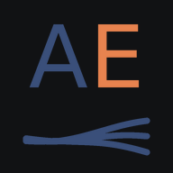

<!DOCTYPE html>
<html lang="es">
<head>
<meta charset="utf-8">
<meta name="viewport" content="width=device-width, initial-scale=1">
<title>Mapa de Ajuste Elástico</title>
<meta name="apple-mobile-web-app-capable" content="yes">
<meta name="mobile-web-app-capable" content="yes">
<meta name="apple-mobile-web-app-title" content="Ajuste Elástico">
<meta name="apple-mobile-web-app-status-bar-style" content="black-translucent">
<meta name="theme-color" content="#111214">
<link rel="manifest" href="manifest.webmanifest">
<link rel="icon" href="iconos/icono-192.png">
<link rel="apple-touch-icon" href="iconos/apple-touch-icon.png">
<link rel="preconnect" href="https://fonts.googleapis.com">
<link rel="preconnect" href="https://fonts.gstatic.com" crossorigin>
<link href="https://fonts.googleapis.com/css2?family=Poppins:wght@500;600&family=Source+Sans+3:wght@400;600&display=swap" rel="stylesheet">
<style>
:root{
  /* Tema oscuro, en la línea del Área de Miembros, con los colores de Ajuste Elástico */
  --fondo:#111214; --sup:#1B1C20; --sup2:#24262B; --linea:#2E3036;
  --tinta:#EDEEF0; --gris:#9DA2AC; --blanco:#FFFFFF;
  --azul:#5D7BB6; --azul-txt:#A9BEE8; --azul-osc:#3A4F7A; --azul-claro:#22304A; --azul-velo:#1A2232;
  --oxido:#E2643A; --oxido-txt:#F29A78; --oxido-claro:#3A2219; --naranja:#E8834F; --naranja-claro:#33241B;
  --papel:var(--fondo);
  --radio-s:6px; --radio-m:12px;
  --sans:'Source Sans 3', system-ui, sans-serif; --display:'Poppins', system-ui, sans-serif;
}
*{box-sizing:border-box}
html{-webkit-text-size-adjust:100%}
body{margin:0;background:var(--fondo);color:var(--tinta);color-scheme:dark;font:400 17px/1.55 var(--sans)}
button{font:inherit;color:inherit;background:none;border:0;padding:0;cursor:pointer}
input,select,textarea{font:inherit;color:inherit}
a{color:var(--azul-txt);text-underline-offset:3px}
:focus-visible{outline:3px solid var(--naranja);outline-offset:2px;border-radius:4px}
h1,h2,h3{font-family:var(--display);font-weight:600;line-height:1.2;margin:0;letter-spacing:-.01em}
.suave{color:var(--gris)} .chico{font-size:14px}
.link{color:var(--azul-txt);text-decoration:underline;text-underline-offset:3px}
.link.suave{color:var(--gris)}
.primario{background:#FFFFFF;color:#111214;padding:11px 22px;border-radius:8px;font-weight:600}
.primario:hover{background:#E4E5E8}
.secundario,.boton{display:inline-block;border:1px solid #4A4D55;color:var(--tinta);padding:8px 16px;border-radius:8px;font-weight:600;text-decoration:none;background:var(--sup2);font-size:15px}
.secundario:hover,.boton:hover{background:var(--azul-velo)}

/* Barra */
.barra{display:flex;align-items:center;justify-content:space-between;gap:16px;padding:14px 28px;background:var(--sup);border-bottom:1px solid var(--linea)}
.marca svg{height:56px;width:auto;display:block}
.barra-der{display:flex;gap:14px;align-items:center;font-size:15px}
.quien{font-weight:600}

/* Entrada */
.entrada{max-width:460px;margin:8vh auto 60px;padding:0 20px}
.entrada h1{font-size:30px;margin-bottom:10px}
.entrada form{display:grid;gap:10px;margin:26px 0}
.entrada label{font-weight:600}
.entrada input{padding:12px 14px;border:1.5px solid var(--linea);border-radius:var(--radio-s);background:var(--sup);font-size:18px}
.entrada .primario{justify-self:start}
.error{color:var(--oxido-txt);margin:0}
.demo{border-left:3px solid var(--naranja);padding:4px 0 4px 16px;margin-top:30px}
.demo ul{margin:6px 0 12px;padding-left:20px}

/* Alumno: camino a la izquierda, video a la derecha (arriba en el celular) */
.layout{display:grid;grid-template-columns:minmax(0,1fr) minmax(380px,46%);gap:0;max-width:1440px;margin:0 auto}
.alumno{padding:0 40px 120px;min-width:0}
.alumno h2{font-size:20px;margin:0 0 14px}
.panel-video{position:sticky;top:0;align-self:start;height:100vh;padding:24px 32px 24px 8px;display:flex;flex-direction:column;justify-content:center;gap:10px}
.pv-marco{position:relative;aspect-ratio:16/9;background:#000;border-radius:12px;overflow:hidden;border:1px solid var(--linea)}
.pv-marco iframe,.pv-marco #yt{position:absolute;inset:0;width:100%;height:100%;border:0}
.pv-titulo{margin:0;font-family:var(--display);font-weight:500;font-size:15px;color:var(--gris);display:flex;align-items:center;gap:10px;flex-wrap:wrap}
.pv-aviso{font-family:var(--sans);font-size:13px;font-weight:600;color:#1B1208;background:var(--naranja);padding:2px 10px;border-radius:999px;opacity:0;transform:translateY(4px);transition:opacity .25s,transform .25s}
.pv-aviso.ver{opacity:1;transform:none}
.panel-video.cambio .pv-marco{animation:cambioVideo .7s ease}
@keyframes cambioVideo{0%{box-shadow:0 0 0 0 rgba(232,131,79,.9)}40%{box-shadow:0 0 0 6px rgba(232,131,79,.55)}100%{box-shadow:0 0 0 0 rgba(232,131,79,0)}}

/* Encabezado */
.hero{padding:28px 0 6px}
.hero-prog{margin:0;color:var(--gris);font-size:15px;display:flex;flex-wrap:wrap;gap:4px 16px}
.hero-prog span{color:var(--tinta)}
.hero h1{font-size:clamp(30px,5vw,42px);margin:4px 0 14px;letter-spacing:-.02em}
.estado{display:grid;gap:2px;padding-left:14px;border-left:4px solid var(--azul);margin-bottom:20px}
.estado strong{font-family:var(--display);font-weight:600;font-size:18px;color:var(--azul-txt)}
.estado span{color:var(--gris);font-size:16px}
.estado-meterle{border-left-color:var(--oxido)} .estado-meterle strong{color:var(--oxido-txt)}
.estado-adelantado,.estado-m2{border-left-color:var(--naranja)} .estado-adelantado strong,.estado-m2 strong{color:var(--naranja)}
.estado-pausa{border-left-color:var(--linea)} .estado-pausa strong{color:var(--gris)}
.tira{list-style:none;margin:0;padding:0;display:grid;grid-template-columns:repeat(5,1fr);gap:6px}
.tramo{display:grid;gap:6px;min-width:0;align-content:start}
.barra-tramo{height:6px;border-radius:999px;background:var(--sup2);overflow:hidden}
.barra-tramo span{display:block;height:100%;width:calc(var(--lleno) * 100%);background:var(--tinta);border-radius:999px}
.tramo.prox .barra-tramo span{background:var(--naranja)}
.tramo.prox.meterle .barra-tramo span{background:var(--oxido)}
.tramo-txt{display:flex;align-items:center;gap:3px;font-family:var(--display);font-weight:500;font-size:12.5px;color:var(--gris);white-space:nowrap;overflow:hidden;text-overflow:ellipsis}
.tramo-txt svg{width:13px;height:13px;flex:none}
.tramo.tuvo .tramo-txt,.tramo.prox .tramo-txt{color:var(--tinta)}
.tramo.prox .tramo-txt{font-weight:600}
.tramo-sub{font-size:12px;color:var(--naranja);margin-top:-4px;font-weight:600}
.tramo.meterle .tramo-sub{color:var(--oxido-txt)}
.tira.animar .barra-tramo span{animation:llenar .9s cubic-bezier(.3,.7,.2,1) both}
@keyframes llenar{from{width:0}}
.clase-hecha{margin-top:14px;display:flex;flex-wrap:wrap;gap:8px 18px;align-items:center;font-size:15px}
.clase-hecha p{margin:0;width:100%;font-weight:600}

.nota{margin:22px 0 0;padding:14px 18px;background:var(--naranja-claro);border-left:3px solid var(--naranja);border-radius:0 var(--radio-m) var(--radio-m) 0}
.nota p{margin:0}
.nota cite{display:block;font-style:normal;font-size:14px;color:var(--naranja);font-weight:600;margin-top:6px}
.de-andy{margin-top:24px}
.extra{display:flex;gap:12px;align-items:flex-start;padding:14px 16px;background:var(--sup);border-radius:var(--radio-m);margin-bottom:8px;cursor:pointer;border:1px solid var(--naranja)}
.extra input{width:22px;height:22px;margin:2px 0 0;accent-color:var(--naranja);flex:none}

/* El camino */
.camino{position:relative;margin-top:34px;padding-bottom:10px}
.trazo{position:absolute;left:0;top:0;pointer-events:none;overflow:visible}
.trazo-base{fill:none;stroke:#3A3D45;stroke-width:3;stroke-dasharray:2 9;stroke-linecap:round}
.trazo-hecho{fill:none;stroke:var(--naranja);stroke-width:4;stroke-linecap:round;opacity:.9}
.etapa-label{position:relative;z-index:1;margin:30px 0 12px 64px;background:var(--fondo);padding:4px 10px 4px 0;width:max-content;max-width:calc(100% - 64px)}
.etapa-label:first-of-type{margin-top:6px}
.etapa-label h3{font-size:13.5px;font-family:var(--sans);font-weight:600;color:var(--gris);margin:0}
.etapa-label p{margin:0;font-size:13.5px;color:#6E737D}
.nodo{position:relative;margin:0 0 6px calc(var(--ola))}
.nodo-fila{display:flex;align-items:center;gap:14px}
.punto{position:relative;z-index:1;width:46px;height:46px;border-radius:50%;flex:none;display:grid;place-items:center;
  background:var(--sup2);border:2px solid #3A3D45;color:var(--gris);font-family:var(--display);font-weight:600;font-size:15px;transition:transform .15s}
.punto svg{width:22px;height:22px}
.punto:hover{transform:scale(1.06)}
.est-listo .punto,.est-casi .punto{background:var(--tinta);border-color:var(--tinta);color:#111}
.est-cuesta .punto{border-color:var(--oxido);color:var(--oxido-txt);background:var(--oxido-claro)}
.nodo-tit{text-align:left;padding:6px 4px;display:grid;gap:1px}
.nodo-tit span{font-size:16.5px;line-height:1.3}
.est-listo .nodo-tit span,.est-casi .nodo-tit span{color:var(--gris)}
.nodo-tit small{font-size:14px;color:var(--gris)}
.nodo-tit small.oxido{color:var(--oxido-txt);font-weight:600}
.nodo.abierto{margin:14px 0 22px}
.nodo.abierto .punto{width:58px;height:58px;font-size:18px;background:var(--naranja);border-color:var(--naranja);color:#1B1208;box-shadow:0 0 0 7px rgba(232,131,79,.18)}
.nodo.abierto.est-listo .punto,.nodo.abierto.est-casi .punto{background:var(--naranja);border-color:var(--naranja)}
.nodo.abierto .nodo-tit span{font-family:var(--display);font-weight:600;font-size:22px;color:var(--tinta);line-height:1.2}
.tarjeta{position:relative;z-index:1;margin:12px 0 0 0;background:var(--sup);border:1px solid var(--linea);border-radius:14px;padding:20px 22px 22px;animation:abrir .25s cubic-bezier(.2,.8,.3,1) both}
@keyframes abrir{from{opacity:0;transform:translateY(-6px)}}
.chips{display:flex;flex-wrap:wrap;gap:6px;margin-bottom:10px}
.chips:empty{display:none}
.chip{display:inline-flex;align-items:center;gap:5px;font-size:13.5px;font-weight:600;padding:3px 10px;border-radius:999px;background:var(--azul-claro);color:var(--azul-txt);white-space:nowrap}
.chip svg{width:15px;height:15px}
.chip-oxido{background:var(--oxido-claro);color:var(--oxido-txt)}
.consigna p{margin:0 0 10px;color:#D6D9DF}
.consigna strong{color:var(--tinta)}
.reglas{margin:0 0 12px;padding-left:22px;color:#D6D9DF}
.reglas li{margin:5px 0}
.link-seek{display:inline-flex;align-items:center;gap:4px;color:var(--azul-txt);font-weight:600;text-decoration:underline;text-underline-offset:3px}
.link-seek svg{width:14px;height:14px}
.material{display:flex;flex-wrap:wrap;gap:8px;margin:4px 0 6px}
.mat{display:inline-flex;align-items:center;gap:9px;padding:9px 14px;background:var(--sup2);border:1px solid var(--linea);border-radius:10px;color:var(--tinta)!important;text-decoration:none;font-weight:600;font-size:15px;text-align:left}
.mat:hover{border-color:#5A5E68}
.mat svg{width:17px;height:17px;flex:none;color:var(--naranja)}
a.mat svg{color:var(--azul-txt)}
.mat small{display:block;font-weight:400;color:var(--gris);font-size:13px}
.pregunta{margin-top:18px;padding-top:16px;border-top:1px solid var(--linea)}
.pregunta h4{font-family:var(--display);font-weight:600;font-size:18px;margin:0 0 10px}
.ops{display:grid;gap:8px}
.op{display:flex;align-items:center;gap:12px;width:100%;text-align:left;padding:12px 14px;border-radius:10px;border:1.5px solid var(--linea);background:var(--sup2);font-weight:600;font-size:16px;line-height:1.3;color:var(--tinta)}
.op:hover{border-color:#5A5E68}
.op-punto{width:18px;height:18px;border-radius:50%;border:2px solid #5A5E68;flex:none}
.op.sel{border-color:var(--tinta);background:#2A2C32}
.op.sel .op-punto{border:6px solid var(--tinta)}
.op.sel.nivel-cuesta{border-color:var(--oxido);background:var(--oxido-claro)}
.op.sel.nivel-cuesta .op-punto{border-color:var(--oxido-txt)}
.respuesta{display:flex;gap:12px;align-items:flex-start;margin-top:14px;padding:14px 16px;border-radius:12px;border:1.5px solid var(--azul);background:var(--azul-velo);animation:aparecerResp .35s cubic-bezier(.2,.8,.3,1) both}
@keyframes aparecerResp{from{opacity:0;transform:translateY(4px) scale(.98)}}
.respuesta p{margin:0 0 4px;color:var(--tinta)}
.respuesta p:not(.resp-tit) + p{margin-top:10px}
.resp-tit{font-family:var(--display);font-weight:600;font-size:15px;letter-spacing:.01em;color:var(--azul-txt)!important;margin-bottom:2px!important}
.resp-ico{flex:none;width:28px;height:28px;margin-top:1px;color:var(--azul-txt)}
.resp-ico svg{width:28px;height:28px}
.resp-ok{border-color:#3FB37F;background:#12251C}
.resp-ok .resp-ico,.resp-ok .resp-tit{color:#5BD49A!important}
.resp-rec.nivel-casi{border-color:var(--naranja);background:var(--naranja-claro)}
.resp-rec.nivel-casi .resp-ico,.resp-rec.nivel-casi .resp-tit{color:var(--naranja)!important}
.resp-rec.nivel-cuesta{border-color:var(--oxido);background:var(--oxido-claro)}
.resp-rec.nivel-cuesta .resp-ico,.resp-rec.nivel-cuesta .resp-tit{color:var(--oxido-txt)!important}
.festejo .resp-tit{font-size:17px}
.confeti{position:fixed;inset:0;pointer-events:none;z-index:50}
.apoyo{margin-top:16px;padding:14px 16px;border-radius:10px;background:var(--naranja-claro)}
.apoyo h4,.dificultades h4{margin:0 0 6px;font-family:var(--display);font-weight:600;font-size:15px}
.apoyo>p{margin:0 0 6px;font-size:15.5px;color:#D6D9DF}
.apoyo-item{padding-top:10px}
.apoyo-t{margin:0;font-weight:600}
.apoyo-c{margin:0 0 6px;font-size:14.5px;color:var(--gris)}
.apoyo-links{display:flex;flex-wrap:wrap;gap:8px}
.dificultades{margin-top:16px}
.dif{padding:10px 0;border-top:1px solid var(--linea)}
.dif:first-of-type{border-top:0;padding-top:2px}
.dif p{margin:0 0 4px;color:#D6D9DF}
.dif .dif-q{font-weight:600;color:var(--tinta)}
.dif a{display:inline-block;margin-right:14px}
.seguir{margin-top:18px}
.seguir .primario{display:inline-grid;grid-template-columns:auto auto;align-items:center;gap:0 12px;text-align:left;padding:12px 20px}
.seguir .primario span{font-size:17px}
.seguir .primario small{grid-row:2;font-weight:500;font-size:13.5px;color:#4A4D55;max-width:320px}
.seguir .primario svg{grid-row:1/3;grid-column:2;width:20px;height:20px}
.standards{display:flex;flex-wrap:wrap;gap:8px}
.chip-op{padding:8px 14px;border-radius:999px;border:1.5px solid var(--linea);background:var(--sup2);font-weight:500;font-size:15px;color:var(--tinta)}
.chip-op:hover{border-color:#5A5E68}
.chip-op.sel{background:var(--tinta);border-color:var(--tinta);color:#111;font-weight:600}
.otro-standard{display:flex;gap:8px;margin-top:12px;flex-wrap:wrap}
.otro-standard input{flex:1 1 140px;min-width:0;width:100%;padding:8px 14px;border:1.5px solid var(--linea);border-radius:999px;background:var(--sup2);color:var(--tinta)}
.meta{position:relative;display:flex;align-items:center;gap:14px;margin:26px 0 0 0}
.meta span{width:46px;height:46px;border-radius:50%;display:grid;place-items:center;border:2px dashed #3A3D45;color:#6E737D;background:var(--fondo);position:relative;z-index:1}
.meta span svg{width:20px;height:20px}
.meta p{margin:0;color:#6E737D;font-family:var(--display);font-weight:500}
.pie{margin-top:34px;color:var(--gris);font-size:15px}

@media (max-width:999px){
    .layout{display:flex;flex-direction:column-reverse}
  .panel-video{position:sticky;top:0;z-index:5;height:auto;padding:0;background:var(--fondo);gap:0;width:100%}
  .pv-marco{border-radius:0;border:0;border-bottom:1px solid var(--linea)}
  .pv-titulo{padding:6px 16px;font-size:13.5px;border-bottom:1px solid var(--linea)}
  .alumno{padding:0 18px 100px}
}
@media (max-width:560px){
  .tira{gap:4px}
  .tramo-txt{font-size:11px}
  .nodo{margin-left:calc(var(--ola) * .5)}
  .nodo.abierto{margin-left:0}
  .tarjeta{padding:16px 16px 18px;margin-left:-4px;margin-right:-4px}
  .etapa-label{margin-left:58px;max-width:calc(100% - 58px)}
  .nodo.abierto .nodo-tit span{font-size:19px}
  .punto{width:42px;height:42px}
  .nodo.abierto .punto{width:50px;height:50px}
}


.apoyo-parte{margin:12px 0 6px;font-size:13px;font-weight:600;color:var(--tenue,#A4A7AE);}

.lineas{position:fixed;inset:0;width:100vw;height:100vh;z-index:0;pointer-events:none}
.lineas path{fill:none;stroke-linecap:round}
.lineas .l-cuerpo{stroke:url(#lg-cuerpo)}
.lineas .l-filo{stroke:url(#lg-filo)}
.layout{position:relative;z-index:1}
.etapa-label{background:none!important;text-shadow:0 0 12px var(--fondo),0 0 4px var(--fondo)}
/* Documento nuevo */
.doc-nuevo{display:flex;align-items:center;gap:14px;margin:16px 0 4px;padding:14px 16px;border-radius:12px;background:#1E2A44;border:1px solid #5D7BB6;color:var(--tinta);text-decoration:none;transition:border-color .15s,background .15s}
.doc-nuevo:hover{background:#243256;border-color:#8FA6D6}
.doc-nuevo .dn-ico{width:40px;height:40px;border-radius:10px;background:#5D7BB6;color:#fff;display:grid;place-items:center;flex:none}
.doc-nuevo .dn-ico svg{width:20px;height:20px}
.doc-nuevo small{display:block;font-size:12.5px;color:#AFC0E6;font-weight:600}
.doc-nuevo strong{display:block;font-size:16px}
.doc-nuevo>svg{margin-left:auto;width:18px;height:18px;transform:rotate(-90deg);opacity:.7;flex:none}
.doc-nuevo>span:nth-child(2){min-width:0}
.pv-aviso:empty{display:none}
/* Envío obligatorio antes de seguir */
.envio{margin-top:18px;padding:16px 18px;border-radius:12px;background:#2A1E16;border:1px solid #E8834F}
.envio-t{display:flex;gap:10px;align-items:center;margin:0}
.envio-t svg{width:20px;height:20px;color:#E8834F;flex:none}
.envio-c{margin:6px 0 12px 30px;color:var(--tenue,#A4A7AE);font-size:15px}
.envio .fila-botones{display:flex;flex-wrap:wrap;gap:10px;align-items:center;margin-left:30px}
.envio-check{display:flex;gap:10px;align-items:center;padding:10px 14px;border-radius:8px;background:var(--sup2);cursor:pointer;font-weight:600}
.envio-check input{width:18px;height:18px;accent-color:#3FB37F}
.envio-ok{background:#12251C;border-color:#3FB37F}
.envio-ok .envio-t svg{color:#3FB37F}
.envio-ok .fila-botones{margin-top:10px}
.nota-paso{margin:12px 0 0;padding:10px 14px;border-radius:10px;background:var(--sup2);font-size:15px;color:var(--tinta)}
.barra{position:relative;z-index:2}
.tip-paso{display:flex;gap:12px;align-items:flex-start;margin:14px 0 0;padding:14px 16px;border-radius:12px;background:#2A2416;border:1px solid #C9A24A}
.tip-paso svg{width:22px;height:22px;flex:none;color:#E9C46A;margin-top:2px}
.tip-paso p{margin:0;font-size:15.5px}

/* Miniatura del video en cada paso del camino */
.nodo-fila .mini{flex:none;margin-left:auto;width:80px;aspect-ratio:16/9;border-radius:7px;overflow:hidden;border:1px solid var(--linea);background:var(--sup2);padding:0}
.nodo-fila .mini img{width:100%;height:100%;object-fit:cover;display:block;opacity:.85}
.est-listo .nodo-fila .mini img,.est-casi .nodo-fila .mini img{opacity:.5}
/* Barra fija: avance para la próxima clase */
.barra-clase{position:sticky;bottom:max(12px,env(safe-area-inset-bottom));z-index:5;margin-top:28px;display:flex;align-items:center;justify-content:space-between;gap:14px;
  padding:12px 14px 12px 18px;background:rgba(27,28,32,.94);backdrop-filter:blur(10px);-webkit-backdrop-filter:blur(10px);border:1px solid var(--linea);border-radius:14px;box-shadow:0 10px 30px rgba(0,0,0,.45)}
.bc-izq{display:grid;gap:2px;min-width:0}
.bc-izq strong{font-family:var(--display);font-weight:600;font-size:15px}
.bc-izq>span:not(.bc-puntos){font-size:14px;color:var(--gris)}
.bc-puntos{display:flex;gap:5px;margin-top:4px}
.bc-puntos i{width:9px;height:9px;border-radius:50%;background:var(--linea)}
.bc-puntos i.ok{background:var(--tinta)}
.bc-puntos i.ahora{background:var(--naranja);box-shadow:0 0 0 3px rgba(232,131,79,.25)}
.bc-sig{display:grid;text-align:right;gap:1px;max-width:58%;padding:8px 12px;border-radius:10px;background:var(--sup2);border:1px solid var(--linea)}
.bc-sig small{font-size:12.5px;color:var(--naranja);font-weight:600;text-transform:uppercase;letter-spacing:.04em}
.bc-sig span{font-size:14.5px;font-weight:600;line-height:1.25;color:var(--tinta);overflow:hidden;display:-webkit-box;-webkit-line-clamp:2;-webkit-box-orient:vertical}
.bc-listo{display:inline-flex;align-items:center;gap:8px;font-size:14.5px;font-weight:600;color:#5BD49A;text-align:right}
.bc-listo svg{width:18px;height:18px;flex:none}
.bc-listo.bc-ultimo{color:var(--gris);font-weight:400}
body:has(.barra-clase) #aviso{bottom:104px}
@media (max-width:560px){
  .nodo-fila .mini{width:64px}
  .barra-clase{padding:10px 10px 10px 14px;gap:10px}
  .bc-sig{max-width:55%;padding:7px 10px}
  .bc-sig span{font-size:13.5px}
}

/* Ver el resto del camino (por defecto solo paso anterior, actual y siguiente) */
.mas-pasos{position:relative;z-index:1;display:block;margin:14px 0 14px 64px;padding:8px 14px;border-radius:999px;border:1px dashed #3A3D45;background:var(--fondo);color:var(--gris);font-size:14.5px;font-weight:600}
.mas-pasos:hover{color:var(--tinta);border-color:var(--gris)}
@media (max-width:560px){.mas-pasos{margin-left:58px}}

/* Videos mandados desde el aula */
.vids{list-style:none;margin:10px 0 0;padding:0;display:grid;gap:6px}
.vids li{display:flex;align-items:center;gap:8px;font-size:15px;color:var(--tinta)}
.vids li svg{width:16px;height:16px;color:#5BD49A;flex:none}
.vids li .link{margin-left:auto}
.boton-grabar{display:inline-flex;align-items:center;gap:10px}
.boton-grabar i{width:12px;height:12px;border-radius:50%;background:#E5484D;box-shadow:0 0 0 3px rgba(229,72,77,.25)}
.subir-galeria{cursor:pointer}
/* Grabador a pantalla completa, como la cámara de WhatsApp: la imagen ocupa todo y los controles van encima */
body.con-grabador{overflow:hidden}
.grabador{position:fixed;inset:0;height:100vh;height:100dvh;z-index:50;background:#000;color:#fff;overflow:hidden;touch-action:none}
.grabador .gr-vivo,.grabador .gr-ver{position:absolute;inset:0;width:100%;height:100%;object-fit:cover;background:#000}
.grabador .gr-ver{object-fit:contain}
.gr-vivo.espejo{transform:scaleX(-1)}
.gr-cab{position:absolute;top:0;left:0;right:0;display:flex;align-items:center;gap:12px;padding:calc(12px + env(safe-area-inset-top)) 14px 28px;background:linear-gradient(rgba(0,0,0,.55),transparent);z-index:2}
.gr-tit{min-width:0;flex:1;text-shadow:0 1px 3px rgba(0,0,0,.6)}
.gr-tit small{display:block;font-size:13px;opacity:.85}
.gr-tit strong{display:block;font-family:var(--display);font-weight:600;font-size:15px;line-height:1.25;white-space:nowrap;overflow:hidden;text-overflow:ellipsis}
.grabando .gr-tit{visibility:hidden}
.gr-x{width:42px;height:42px;border-radius:50%;border:0;background:rgba(0,0,0,.35);color:#fff;display:grid;place-items:center;flex:none;padding:0}
.gr-x svg{width:22px;height:22px}
.gr-reloj{position:absolute;left:50%;transform:translateX(-50%);top:calc(16px + env(safe-area-inset-top));background:#E5484D;color:#fff;font:600 15px var(--display);padding:4px 12px;border-radius:999px}
.gr-msg{position:absolute;left:20px;right:20px;top:50%;transform:translateY(-50%);margin:0;text-align:center;font-size:16px;line-height:1.45;background:rgba(17,18,20,.88);padding:16px;border-radius:14px;z-index:2}
.gr-pie{position:absolute;left:0;right:0;bottom:0;display:flex;align-items:center;justify-content:space-between;gap:12px;padding:40px 28px calc(24px + env(safe-area-inset-bottom));background:linear-gradient(transparent,rgba(0,0,0,.55));z-index:2}
.revisando .gr-pie{background:linear-gradient(transparent,rgba(0,0,0,.75));padding-top:20px}
.revisando .gr-ver{top:calc(70px + env(safe-area-inset-top));bottom:auto;height:calc(100% - 190px - env(safe-area-inset-top) - env(safe-area-inset-bottom))}
.gr-lado{width:48px;height:48px;flex:none}
.gr-redondo{border-radius:50%;border:0;background:rgba(0,0,0,.4);color:#fff;display:grid;place-items:center;padding:0}
.gr-redondo svg{width:24px;height:24px}
.gr-rec{width:78px;height:78px;border-radius:50%;border:4px solid #fff;background:none;display:grid;place-items:center;padding:0;flex:none}
.gr-rec i{width:62px;height:62px;border-radius:50%;background:#E5484D;transition:all .2s}
.gr-rec.grabando i{width:28px;height:28px;border-radius:6px}
.gr-texto{border:0;background:rgba(255,255,255,.14);color:#fff;font:600 16px var(--sans);padding:12px 18px;border-radius:999px}
.gr-mandar{width:62px;height:62px;border-radius:50%;border:0;background:var(--naranja);color:#111;display:grid;place-items:center;padding:0;margin-left:auto;box-shadow:0 6px 18px rgba(0,0,0,.4)}
.gr-mandar svg{width:28px;height:28px;margin-left:3px}
@media (min-width:900px){.grabador{inset:4vh 22vw;height:auto;border-radius:18px;box-shadow:0 0 0 100vmax rgba(0,0,0,.7)}}
/* Cartelito de subida en segundo plano */
.subida-pill{white-space:nowrap;position:fixed;left:50%;transform:translateX(-50%);top:calc(12px + env(safe-area-inset-top));z-index:40;display:flex;align-items:center;gap:10px;max-width:calc(100% - 24px);padding:10px 16px;border-radius:999px;background:rgba(27,28,32,.96);border:1px solid var(--linea);box-shadow:0 8px 24px rgba(0,0,0,.45);font-size:15px;font-weight:600;color:var(--tinta)}
.subida-pill.ok{color:#5BD49A}
.subida-pill.ok svg{width:18px;height:18px}
.subida-pill.error{white-space:normal;border-radius:14px;color:var(--oxido-txt);font-weight:400}
.subida-pill .link{flex:none}
.sp-anillo{--p:30;width:18px;height:18px;border-radius:50%;flex:none;background:conic-gradient(var(--naranja) calc(var(--p)*1%),#3A3D45 0);-webkit-mask:radial-gradient(circle,transparent 5px,#000 6px);mask:radial-gradient(circle,transparent 5px,#000 6px)}
.vid-pend .sp-anillo{animation:girar 1.2s linear infinite;background:conic-gradient(var(--naranja) 30%,#3A3D45 0)}
@keyframes girar{to{transform:rotate(1turn)}}
.vid-pend{display:flex;gap:10px;align-items:flex-start;margin:10px 0 0;font-size:15px;color:var(--gris)}
.vid-pend .sp-anillo{margin-top:3px}

.como{font-size:13px;font-weight:600;padding:2px 9px;border-radius:999px;white-space:nowrap}
.como-listo,.como-casi{background:var(--azul-claro);color:var(--azul-txt)}
.como-cuesta{background:var(--oxido-claro);color:var(--oxido-txt)}
.acceso{margin:18px 0;padding:14px;border:1px solid var(--linea);border-radius:var(--radio-s);background:var(--sup2)}
.acceso-cab{display:grid;gap:2px;margin-bottom:10px}
.acceso-cab h3{font-size:16px}
.acceso-cab .suave{font-size:15px}
.bloque-email{display:grid;gap:4px;font-weight:600;font-size:15px;margin-bottom:10px}
.bloque-email input{padding:8px 10px;border:1.5px solid var(--linea);border-radius:var(--radio-s);background:var(--sup);font-weight:400}
.link-inv textarea{width:100%;border:1px solid var(--linea);border-radius:var(--radio-s);padding:10px;font-size:15px;background:var(--sup);resize:vertical}
.link-inv p{margin:0 0 6px}
.fila-botones{display:flex;flex-wrap:wrap;gap:8px;margin-top:8px}
/* Aviso de guardado */
#aviso{position:fixed;right:16px;bottom:16px;background:var(--tinta);color:var(--fondo);font-weight:600;padding:8px 14px;border-radius:999px;font-size:14px;opacity:0;transform:translateY(8px);transition:.2s;pointer-events:none;z-index:9}
#aviso.visible{opacity:1;transform:none}
#aviso.error{background:var(--oxido);color:var(--blanco)}

/* Panel de Andy */
.admin{max-width:1240px;margin:0 auto;padding:6px 20px 80px}
.admin h2{font-size:20px;margin:0 0 12px;display:flex;align-items:center;gap:10px}
.admin .cuenta{font:600 13px var(--sans);background:var(--naranja);color:#111;border-radius:999px;padding:2px 9px}
.por-ver{margin:8px 0 34px}
.tarjetas-video{display:grid;grid-template-columns:repeat(auto-fill,minmax(250px,1fr));gap:12px}
.tarjeta-video{display:flex;gap:12px;align-items:center;text-align:left;background:var(--sup);border:1px solid var(--linea);border-radius:var(--radio-m);padding:10px;color:var(--tinta);cursor:pointer}
.tarjeta-video:hover{border-color:var(--naranja)}
.tv-mini{position:relative;width:64px;height:84px;flex:none;border-radius:8px;overflow:hidden;background:#000;display:grid;place-items:center}
.tv-mini img{position:absolute;inset:0;width:100%;height:100%;object-fit:cover}
.tv-play{position:relative;width:30px;height:30px}
.tv-txt{display:grid;gap:2px;min-width:0}
.tv-txt strong{font-size:16px}
.tv-txt span{font-size:14.5px;line-height:1.3}
.tv-txt small{color:var(--gris);font-size:13px}
.adm-top{display:flex;justify-content:space-between;align-items:center;margin:4px 0 14px}
.volver-adm{font-weight:600}
.revision{display:grid;grid-template-columns:minmax(0,1.2fr) minmax(0,1fr);gap:24px;margin:18px 0 8px;align-items:start}
.rev-video{display:grid;gap:12px}
.rev-video>.chico{margin:-4px 0 0}
.rev-player{height:min(64vh,640px);background:#000;border-radius:var(--radio-m);overflow:hidden;display:grid;place-items:center}
.rev-player iframe{width:100%;height:100%;border:0}
.rev-info{display:grid;gap:6px}
.rev-cab{display:flex;justify-content:space-between;align-items:center;gap:12px;flex-wrap:wrap}
.rev-info p{margin:0}
.rev-paso{display:flex;flex-wrap:wrap;gap:4px 12px;align-items:baseline;font-size:17px}
.rev-info .fila-botones{margin-top:6px;align-items:center}
.visto{display:inline-flex;align-items:center;gap:6px;color:#5BD49A;font-weight:600}
.visto svg{width:18px;height:18px}
.rev-otros h4{font-size:14px;color:var(--gris);margin:0 0 8px;font-weight:600}
.rev-otros>div{display:flex;flex-wrap:wrap;gap:8px}
.chip-video{border:1px solid var(--linea);background:var(--sup);color:var(--tinta);border-radius:999px;padding:6px 12px;font-size:14px;cursor:pointer}
.chip-video small{color:var(--gris)}
.chip-video.nuevo{border-color:var(--naranja)}
.chip-video.sel{background:var(--tinta);color:var(--fondo)}
.chip-video.sel small{color:var(--fondo)}
.rev-msg .mensaje{margin:0;position:sticky;top:12px}
.rev-vacio{background:var(--sup);border-radius:var(--radio-m);padding:22px}
.det-resto{background:var(--sup);border-radius:var(--radio-m);padding:22px;margin-top:28px}
.lista-cab{display:flex;justify-content:space-between;align-items:center;margin-bottom:12px}
.lista-cab h1{font-size:26px}
.lista-botones{display:flex;gap:8px;flex-wrap:wrap;justify-content:flex-end}
.barra-der>*{white-space:nowrap}
.chip-prueba::first-letter,.barra-der [data-accion=volver-admin]::first-letter{text-transform:uppercase}
.chip-prueba{font-size:13px;font-weight:600;padding:3px 10px;border-radius:999px;background:var(--naranja-claro);color:var(--naranja);border:1px solid var(--naranja)}
@media (max-width:600px){.barra-der{gap:10px;font-size:14px}.barra-der .solo-pc{display:none}}
.lista table{width:100%;border-collapse:collapse;background:var(--sup);border-radius:var(--radio-m);overflow:hidden;font-size:16px}
.lista th{text-align:left;font-weight:600;font-size:14px;color:var(--gris);padding:10px 12px;border-bottom:1px solid var(--linea)}
.lista td{padding:12px;border-bottom:1px solid var(--linea);vertical-align:top}
.lista tr[data-elegir]{cursor:pointer}
.lista tr[data-elegir]:hover td{background:var(--azul-velo)}
.lista tr.sel td{background:var(--azul-claro)}
.lista td.nw{white-space:nowrap}
.etapa-completa .etapa-cab{padding:12px 0;border-bottom:1px solid var(--linea);margin:0}
.etapa-completa h3::before{content:'';display:inline-block;width:10px;height:10px;border-radius:50%;background:var(--azul);margin-right:10px;vertical-align:middle}
.marca-prob{display:block;font-size:13px;color:var(--oxido-txt);font-weight:600}
.marca-video{display:block;font-size:13px;color:var(--naranja);font-weight:600}
.vids-adm{list-style:none;margin:0;padding:0;display:grid;gap:8px}
.vids-adm li{display:flex;flex-wrap:wrap;gap:4px 10px;align-items:baseline}
.vids-adm li.nuevo button{color:var(--naranja)}
.estado-chip{font-size:13px;font-weight:600;padding:3px 10px;border-radius:999px;white-space:nowrap;background:var(--azul-claro);color:var(--azul-txt)}
.estado-chip.t-meterle{background:var(--oxido-claro);color:var(--oxido-txt)}
.estado-chip.t-adelantado,.estado-chip.t-m2{background:var(--naranja-claro);color:var(--naranja)}
.estado-chip.t-pausa{background:var(--papel);color:var(--gris);border:1px solid var(--linea)}
.detalle{background:var(--sup);border-radius:var(--radio-m);padding:22px;position:sticky;top:12px;max-height:calc(100vh - 24px);overflow:auto}
.vacio{margin:30px 0}
.det-cab{display:flex;gap:12px;align-items:center;flex-wrap:wrap}
.det-cab h2{font-size:24px}
.mensaje{margin:18px 0;padding:14px;border:1.5px solid var(--azul-claro);border-radius:var(--radio-s);background:var(--azul-velo)}
.mensaje-cab{display:flex;justify-content:space-between;align-items:center;gap:10px;flex-wrap:wrap;margin-bottom:10px}
.mensaje-cab h3,.bloque h3{font-size:16px}
.mensaje-cab span{display:flex;gap:8px}
.mensaje textarea{width:100%;border:1px solid var(--linea);border-radius:var(--radio-s);padding:10px;font-size:15px;line-height:1.45;background:var(--sup);resize:vertical}
.form-admin{display:grid;gap:12px}
.form-admin label,.bloque{display:grid;gap:4px;font-weight:600;font-size:15px}
.form-admin input,.form-admin select,.bloque textarea,.fila-extra input{padding:8px 10px;border:1.5px solid var(--linea);border-radius:var(--radio-s);background:var(--sup);font-weight:400;font-size:16px}
.form-admin label.check{display:flex;gap:8px;align-items:center;font-weight:400}
.ajustes{grid-template-columns:1fr 1fr;margin-bottom:16px}
.ajustes label.check{grid-column:1/-1}
.segmentado{display:inline-flex;border:1.5px solid var(--linea);border-radius:999px;overflow:hidden;justify-self:start}
.segmentado button{padding:6px 14px;font-weight:600}
.segmentado button.sel{background:var(--azul);color:var(--blanco)}
.bloque{margin-top:20px}
.extras-adm,.probs-adm,.avance-adm{list-style:none;margin:6px 0 0;padding:0;font-weight:400}
.extras-adm li{display:flex;justify-content:space-between;gap:10px;padding:6px 0;border-bottom:1px solid var(--linea)}
.extras-adm li>span{flex:1;min-width:0}
.extras-adm li.hecha strong{text-decoration:line-through;color:var(--gris)}
.fila-extra{display:grid;grid-template-columns:1.4fr 1fr auto;gap:8px;margin-top:8px}
.probs-adm li{padding:4px 0}
.avance-adm li{display:flex;align-items:center;gap:10px;padding:5px 0;font-size:15px}
.avance-adm li span:nth-child(2){flex:1}
.mini-nodo{width:18px;height:18px;border-radius:50%;border:2px solid var(--linea);background:var(--sup);flex:none}
.avance-adm .est-listo .mini-nodo,.avance-adm .est-casi .mini-nodo{background:var(--azul);border-color:var(--azul-txt)}
.avance-adm .est-cuesta .mini-nodo{background:var(--oxido-claro);border-color:var(--oxido-txt)}
.links-adm{display:flex;flex-wrap:wrap;gap:10px;align-items:center}
.links-adm p{width:100%;margin:0}

@media (max-width:900px){
  .revision{grid-template-columns:1fr}
  .rev-player{height:min(78vh,640px)}
  .rev-msg .mensaje{position:static}
  .lista th:nth-child(4),.lista td:nth-child(4),.lista th:nth-child(5),.lista td:nth-child(5){display:none}
}
@media (max-width:560px){
  body{font-size:16.5px}
  .barra{padding:12px 16px}
  .marca svg{height:40px}
  .ajustes{grid-template-columns:1fr}
  .fila-extra{grid-template-columns:1fr}
}
@media (prefers-reduced-motion:reduce){*{animation:none!important;transition:none!important}}
.instalar-app{display:flex;align-items:center;gap:12px;margin:0 0 22px;padding:12px 14px;background:var(--sup);border:1px solid var(--linea);border-radius:14px}
.instalar-app img{width:40px;height:40px;border-radius:10px;flex:none}
.instalar-app p{margin:0;flex:1;font-size:15px;line-height:1.35;color:var(--gris)}
.instalar-app p b{color:var(--tinta);display:block;font-size:15.5px}
.instalar-app a,.instalar-app button.ia-si{flex:none;font:600 14.5px var(--sans);color:var(--fondo);background:var(--tinta);border:0;border-radius:10px;padding:8px 12px;text-decoration:none}
.instalar-app .ia-no{flex:none;background:none;border:0;color:var(--gris);font-size:20px;line-height:1;padding:4px}
</style>
</head>
<body>
<div id="app" aria-live="off"></div>
<div id="aviso" role="status"></div>
<script>
const LOGO = `<svg xmlns="http://www.w3.org/2000/svg" role="img" aria-label="Ajuste Elástico" viewBox="0 0 494 112"><text font-family="Poppins, sans-serif" x="10" y="52" font-size="52" font-weight="500" letter-spacing="1.5" fill="#3A4F7A">AJUSTE</text><text font-family="Poppins, sans-serif" x="221.5" y="52" font-size="52" font-weight="500" letter-spacing="1.5" fill="#E8834F">ELÁSTICO</text><path d="M 10.0,83.4 L 15.1,83.0 L 20.1,82.7 L 25.2,82.3 L 30.3,82.0 L 35.3,81.7 L 40.4,81.5 L 45.5,81.4 L 50.5,81.4 L 55.6,81.4 L 60.6,81.6 L 65.7,81.8 L 70.8,82.0 L 75.8,82.3 L 80.9,82.7 L 86.0,83.1 L 91.0,83.4 L 96.1,83.8 L 101.2,84.1 L 106.2,84.4 L 111.3,84.6 L 116.4,84.7 L 121.4,84.7 L 126.5,84.7 L 131.6,84.5 L 136.6,84.3 L 141.7,84.0 L 146.8,83.7 L 151.8,83.2 L 156.9,82.7 L 161.9,82.2 L 167.0,81.6 L 172.1,81.0 L 177.1,80.5 L 182.2,79.9 L 187.3,79.3 L 192.3,78.8 L 197.4,78.4 L 202.5,78.0 L 207.5,77.6 L 212.6,77.3 L 217.7,77.1 L 222.7,76.9 L 227.8,76.8 L 232.8,76.8 L 237.9,76.8 L 243.0,76.9 L 248.1,77.1 L 253.1,77.3 L 258.2,77.5 L 263.2,77.7 L 268.3,78.0 L 273.4,78.3 L 278.4,78.6 L 283.5,78.9 L 288.6,79.2 L 293.6,79.5 L 298.7,79.7 L 303.8,80.0 L 308.8,80.2 L 313.9,80.3 L 318.9,80.5 L 324.0,80.5 L 329.1,80.6 L 334.1,80.6 L 339.2,80.6 L 344.3,80.5 L 349.3,80.4 L 354.4,80.2 L 359.5,80.0 L 364.5,79.8 L 369.6,79.5 L 374.7,79.2 L 379.7,78.9 L 384.8,78.5 L 389.9,78.2 L 394.9,77.8 L 400.0,77.3 L 405.1,76.9 L 410.1,76.5 L 415.2,76.0 L 420.2,75.5 L 425.3,75.0 L 430.4,74.5 L 435.4,74.0 L 440.5,73.6 L 445.6,73.1 L 450.6,72.6 L 455.7,72.1 L 460.8,71.6 L 465.8,71.1 L 470.9,70.7 L 476.0,70.2 L 476.0,70.2" fill="none" stroke="#FFFFFF" stroke-width="2.4" stroke-linecap="round"/><path d="M 10.0,84.0 L 15.1,83.6 L 20.1,83.3 L 25.2,82.9 L 30.3,82.6 L 35.3,82.4 L 40.4,82.2 L 45.5,82.2 L 50.5,82.2 L 55.6,82.3 L 60.6,82.4 L 65.7,82.7 L 70.8,83.0 L 75.8,83.4 L 80.9,83.8 L 86.0,84.2 L 91.0,84.7 L 96.1,85.1 L 101.2,85.5 L 106.2,85.8 L 111.3,86.1 L 116.4,86.3 L 121.4,86.4 L 126.5,86.5 L 131.6,86.4 L 136.6,86.3 L 141.7,86.1 L 146.8,85.8 L 151.8,85.5 L 156.9,85.1 L 161.9,84.6 L 167.0,84.2 L 172.1,83.7 L 177.1,83.2 L 182.2,82.8 L 187.3,82.3 L 192.3,82.0 L 197.4,81.6 L 202.5,81.3 L 207.5,81.1 L 212.6,80.9 L 217.7,80.8 L 222.7,80.8 L 227.8,80.8 L 232.8,80.9 L 237.9,81.1 L 243.0,81.3 L 248.1,81.6 L 253.1,82.0 L 258.2,82.3 L 263.2,82.7 L 268.3,83.2 L 273.4,83.6 L 278.4,84.0 L 283.5,84.5 L 288.6,85.0 L 293.6,85.4 L 298.7,85.8 L 303.8,86.2 L 308.8,86.6 L 313.9,86.9 L 318.9,87.2 L 324.0,87.5 L 329.1,87.7 L 334.1,87.9 L 339.2,88.0 L 344.3,88.1 L 349.3,88.2 L 354.4,88.2 L 359.5,88.2 L 364.5,88.2 L 369.6,88.1 L 374.7,88.0 L 379.7,87.9 L 384.8,87.7 L 389.9,87.5 L 394.9,87.3 L 400.0,87.1 L 405.1,86.9 L 410.1,86.6 L 415.2,86.4 L 420.2,86.1 L 425.3,85.8 L 430.4,85.5 L 435.4,85.3 L 440.5,85.0 L 445.6,84.7 L 450.6,84.5 L 455.7,84.2 L 460.8,83.9 L 465.8,83.7 L 470.9,83.4 L 476.0,83.2 L 476.0,83.2" fill="none" stroke="#FFFFFF" stroke-width="2.4" stroke-linecap="round"/><path d="M 10.0,84.6 L 15.1,84.2 L 20.1,83.9 L 25.2,83.6 L 30.3,83.3 L 35.3,83.1 L 40.4,83.0 L 45.5,82.9 L 50.5,83.0 L 55.6,83.1 L 60.6,83.3 L 65.7,83.6 L 70.8,84.0 L 75.8,84.4 L 80.9,84.9 L 86.0,85.4 L 91.0,85.9 L 96.1,86.4 L 101.2,86.8 L 106.2,87.3 L 111.3,87.6 L 116.4,87.9 L 121.4,88.1 L 126.5,88.2 L 131.6,88.3 L 136.6,88.2 L 141.7,88.1 L 146.8,88.0 L 151.8,87.7 L 156.9,87.4 L 161.9,87.1 L 167.0,86.7 L 172.1,86.4 L 177.1,86.0 L 182.2,85.7 L 187.3,85.3 L 192.3,85.1 L 197.4,84.8 L 202.5,84.7 L 207.5,84.6 L 212.6,84.5 L 217.7,84.6 L 222.7,84.7 L 227.8,84.8 L 232.8,85.1 L 237.9,85.4 L 243.0,85.8 L 248.1,86.2 L 253.1,86.7 L 258.2,87.2 L 263.2,87.7 L 268.3,88.3 L 273.4,88.9 L 278.4,89.5 L 283.5,90.1 L 288.6,90.7 L 293.6,91.3 L 298.7,91.9 L 303.8,92.5 L 308.8,93.0 L 313.9,93.5 L 318.9,94.0 L 324.0,94.4 L 329.1,94.8 L 334.1,95.2 L 339.2,95.5 L 344.3,95.8 L 349.3,96.0 L 354.4,96.3 L 359.5,96.4 L 364.5,96.6 L 369.6,96.7 L 374.7,96.8 L 379.7,96.8 L 384.8,96.9 L 389.9,96.9 L 394.9,96.9 L 400.0,96.9 L 405.1,96.8 L 410.1,96.8 L 415.2,96.7 L 420.2,96.7 L 425.3,96.6 L 430.4,96.6 L 435.4,96.5 L 440.5,96.4 L 445.6,96.4 L 450.6,96.3 L 455.7,96.3 L 460.8,96.2 L 465.8,96.2 L 470.9,96.2 L 476.0,96.2 L 476.0,96.2" fill="none" stroke="#FFFFFF" stroke-width="2.4" stroke-linecap="round"/></svg>`;
/* =====================================================================
   PROGRAMA — contenido del mapa (editable)
   Cada paso: id, etapa, titulo, detalle, entrega ('video'|'audio'|null),
   recursos [{t, url}], problemas [{id, q, fix, url?}]
   ===================================================================== */
const VIDEO_ENLACES = 'https://www.youtube.com/watch?v=TylWJrfPxu0';
const DOC_ENLACES = 'https://docs.google.com/document/d/14Df9jDecsFC6HnizipZ0nu1pBbVw2kOBzvydTMo3VOk/edit';
const WHATSAPP_ANDY = '';   // número con código de país, sin + ni espacios (ej. 5491112345678)
const AULA = 'https://hotmart.com/es/club/andras-martan-kligman';
const DOC_CUELLO_1_GUIA = 'https://docs.google.com/document/d/1P4SVjJFGVKgoYTP-DZD1ZNpM0q-ObKuh/edit';
const DOC_CUELLO_1_EXPL = 'https://docs.google.com/document/d/1F4A99qcJbhQ3kTDGbBUI1NDt7gq_H0RG/edit';
const DOC_PREVIA = 'https://docs.google.com/document/d/1U-WLpCr_hnW5ruUY3mWW3GThD1lYPX6y2AksiWiADnk/edit';
const DOC_ANTIC = 'https://docs.google.com/document/d/1TaI7oAl4eMyHolWW7E-7TPfvxc4yk5SLBnzNlYOjrOM/edit';
const DOC_SUPER = 'https://docs.google.com/document/d/1v3JwZIC3liAwwICnzZSHpBrMBP_4_4Kw9WqACELv35o/edit';
const DOC_CUELLO_2 = 'https://docs.google.com/document/d/1MR6C2vRlCcHo77cJIdyyvjnuxBjdiqJ21zWZfCvulxU/edit';

/* Títulos de los videos (para el reproductor) */
const VIDEOS = {
  'we8Wgy3SmF8': 'Cuellos de botella #3 - Direccion Melódica Libre',
  '2DfcA6_JdW4': 'Posiciones de arpegios por set de cuerdas',
  'GLSfAS-RnhQ': 'Integración: práctica a tempo y skipping',
  'TylWJrfPxu0': 'Ejercitación Nº1: Enlaces de arpegios',
  'PqJhew7HiLs': 'Cómo ordenar las posiciones',
  '86aNkZzca64': 'Ejercitación Nº2: Anticipaciones armónicas',
  '_GkCOK9r3Wg': 'Ejercitación Nº3: Superposiciones de arpegios',
  '-M5xF9Crru8': 'Herramienta iReal: contrabajo acompañante',
  'c_aQIVXsF9M': 'Cuello de botella #1: anticipar los cambios',
  'JHJhLmtCsno': 'Cuello de botella #2: notas por cuerda',
};

/* Standards para elegir. pdf: link a la parte para trabajar (vacío = Andy la manda por WhatsApp) */
const STANDARDS = [
  { t: 'Autumn Leaves', pdf: '' },
  { t: 'Joy Spring', pdf: '' },
  { t: 'That Old Feeling', pdf: '' },
  { t: 'How Deep Is the Ocean', pdf: '' },
  { t: 'There Will Never Be Another You', pdf: '' },
  { t: 'Stella by Starlight', pdf: '' },
  { t: 'But Not for Me', pdf: '' },
  { t: 'Out of Nowhere', pdf: '' },
  { t: 'Have You Met Miss Jones', pdf: '' },
  { t: 'Days of Wine and Roses', pdf: '' },
  { t: 'I Remember You', pdf: '' },
  { t: 'Blue Bossa', pdf: '' },
  { t: 'Blues en Bb', pdf: '' },
];

/* Progreso por defecto, para los pasos que no tienen opciones propias.
   nivel: 'listo' cuenta como hecho, 'casi' también (80-85%), 'cuesta' cuenta como medio paso. */
/* Para pasos que son "mirar" o "mandar": hecho, o pedir ayuda */
const PROGRESO_SIMPLE = [
  { id: 'listo', label: 'Listo, lo hice', nivel: 'listo' },
  { id: 'duda', label: 'No entiendo una parte', nivel: 'cuesta', resp: 'Escribile a Andy por WhatsApp y lo ven juntos.' },
];
const PROGRESO_BASE = [
  { id: 'listo', label: 'Ya me sale', nivel: 'listo' },
  { id: 'casi', label: 'Me sale, con algunos errores', nivel: 'casi' },
  { id: 'cuesta', label: 'Todavía me cuesta', nivel: 'cuesta' },
];

const PROGRAMA = {
  programa: 'Ajuste Elástico',
  modulo: 'Cambios de acorde: construyendo control y fluidez',
  hotmartBase: 'https://hotmart.com/es/club/andras-martan-kligman/products/6223725/content/',
  etapas: [
    { id: 'pre', titulo: 'Antes del primer encuentro', sub: 'Entrenamiento gratuito de arpegios y primera experiencia con los enlaces a tiempo real',
      intro: 'Aprendé a memorizar los intervalos de manera más eficiente, en posiciones que quizás no conozcas tanto.' },
    { id: 'enlaces', titulo: 'Enlaces de arpegios', sub: 'Ejercitación N1: de lo fijo a lo libre' },
    { id: 'antic', titulo: 'Anticipaciones armónicas', sub: 'Ejercitación N2' },
    { id: 'super', titulo: 'Superposiciones', sub: 'Ejercitación N3' },
    { id: 'm2', titulo: 'Arranque del módulo 2', sub: 'ADN del Jazz' },
  ],
  pasos: [
    /* ---------- Pre-sincrónico ---------- */
    {
      id: 'p2', etapa: 'pre', entrega: 'video', envia: 'un video nombrando en voz alta los intervalos, sin tempo, en las 4 posiciones de las primeras 3 cuerdas para los 4 tipos de acorde.',
      video: { id: '2DfcA6_JdW4' }, hotmart: 'k458JjqROl',
      titulo: 'Nombrar los intervalos en voz alta',
      detalle: 'Nombrá los intervalos enteros (7ma mayor, 5ta disminuida, etc.) en voz alta, en las 4 posiciones para los 4 tipos de acorde. Por ahora, solo las posiciones en las primeras 3 cuerdas.',
      recursos: [{ t: 'Doc: Previa técnica - Arpegios base', url: DOC_PREVIA }],
      progreso: [
        { id: 'todas', label: 'Los nombro sin dudar en todas las posiciones de las primeras 3 cuerdas', nivel: 'listo', resp: '¡Seguí adelante!' },
        { id: 'algunas', label: 'Algunas posiciones me salen y otras todavía no', nivel: 'casi',
          resp: 'Si lo que te sale es solo en las primeras tres cuerdas, está perfecto. Vamos a trabajar en profundidad con esas cuerdas en la primera parte del programa y no hace falta más por ahora. Mandame un video y vas a estar listo para seguir avanzando.\n\nSi estás teniendo inconvenientes con algunas posiciones en estas primeras tres cuerdas, separá la información. Trabajá solo sobre las que todavía no salen y tomate el tiempo que necesites para aprenderlas bien, revisando despacito, para arriba y para abajo. Aislar lo que nos cuesta y trabajar en eso es una de las cosas más importantes de la práctica.' },
        { id: 'dudo', label: 'Todavía dudo en casi todas', nivel: 'cuesta',
          resp: 'Escribile a Andy por WhatsApp y lo ven juntos.', muestra: ['dedos'] },
      ],
      problemas: [
        { id: 'dedos', q: 'Los dedos van solos, pero no sé bien qué intervalo estoy tocando',
          fix: 'Trabajá sobre las posiciones que menos conozcas y tomate todo el tiempo que necesites para aprenderlas bien. Separá la información: si algunas ya salen y otras no, trabajá sobre las que no.' },
      ],
    },
    {
      id: 'p3', etapa: 'pre', entrega: 'video', envia: 'un video del mismo ejercicio a tempo, con el metrónomo y los nombres cortos ("siete, uno, tres").',
      video: { id: 'GLSfAS-RnhQ' }, hotmart: 'RONqgwvP7P',
      titulo: 'Lo mismo, a tempo',
      detalle: 'Poné un tempo cómodo y hacé el mismo ejercicio en tiempo real. Acá acortamos el nombre del intervalo: "siete, uno, tres" en vez de "séptima mayor, tónica, tercera mayor". Así no es tan engorroso y fluye mejor. Si aparecen errores, se corrigen al vuelo, o frenás el metrónomo, corregís en la pausa y retomás.',
      progreso: [
        { id: 'limpio', label: 'Me sale casi sin errores', nivel: 'listo', resp: '¡Seguí adelante!' },
        { id: 'poco', label: 'Me equivoco un poco', nivel: 'casi',
          resp: 'Si tenés un 15-20% de error está perfecto. Podés darle un poco más, pero ya está para seguir.' },
        { id: 'mucho', label: 'Me equivoco todo el tiempo', nivel: 'cuesta',
          resp: 'Si el error ronda el 50% de los intentos, hay que ir un escalón para atrás: apagá el metrónomo y repasá la posición que haga falta. Tomate tu tiempo para hacer lo que necesites antes de volver a probarlo a tempo. También podés pasar a tempo las posiciones que más te cuesten antes de juntarlas con las demás.' },
      ],
    },
    {
      id: 'p4', etapa: 'pre', entrega: 'video', envia: 'un video aplicando el skipping: primero sin tempo y después a tempo.',
      video: { id: 'GLSfAS-RnhQ' }, hotmart: 'RONqgwvP7P',
      titulo: 'Aplicar el skipping',
      detalle: 'Repetí los dos pasos anteriores aplicando el skipping: primero sin tempo y después a tempo. Sirve para desordenar la información y asegurarte de que la asimilaste de verdad, no solo para arriba y para abajo.',
      progreso: [
        { id: 'tempo', label: 'Me sale sin tempo y a tempo', nivel: 'listo', resp: '¡Excelente, seguí adelante!' },
        { id: 'sintempo', label: 'Me sale sin tempo, a tempo todavía no', nivel: 'casi',
          resp: '¡Ya casi estás, un último esfuerzo! Aunque sea bien lento… pero a tempo. Igualmente ya hiciste un gran trabajo y estás para seguir adelante si querés.' },
        { id: 'cuesta', label: 'Me cuesta mucho', nivel: 'cuesta',
          resp: 'Mirá los intervalos de la posición en el orden normal una vez y después con el skipping, sobre cada uno de los distintos tipos de acorde. Hacé de a poquito, por sectores y a tu ritmo. Cuando ganes comodidad con un sector, podés empezar a probarlo a tempo.' },
      ],
    },
    {
      id: 'p5', etapa: 'pre', tipo: 'standard',
      titulo: 'Elegir el standard',
      detalle: 'Elegí de la lista el tema con el que vas a trabajar. Si tenés otro en mente, escribilo y lo definimos con Andy.',
    },
    {
      id: 'p5b', etapa: 'pre',
      progreso: [
        { id: 'super', label: '¡Súper! Se entiende todo', nivel: 'listo' },
        { id: 'duda', label: 'Hay cosas que no entiendo', nivel: 'cuesta', resp: 'Escribime por WhatsApp y lo vemos juntos.' },
      ],
      video: { id: 'TylWJrfPxu0' }, hotmart: 'PeAgJn18OW',
      titulo: 'Ver el video de Enlaces de Arpegios y leer el PDF',
      detalle: 'Mirá el video completo antes de empezar y leé el documento: ahí está el paso a paso del ejercicio que vas a hacer sobre tu standard.',
      recursos: [
        { t: 'Video completo: Enlaces de Arpegios', url: VIDEO_ENLACES },
        { t: 'Doc: Enlaces de Arpegios', url: DOC_ENLACES },
      ],
    },
    {
      id: 'p6', etapa: 'pre', entrega: 'video o texto', envia: 'un video corto o un texto con las posiciones que vas a usar para los primeros 4 acordes del standard.', sinProgreso: true,
      video: { id: 'PqJhew7HiLs' },
      titulo: 'Mostrar compases, acordes y posiciones',
      detalle: 'Este video corto muestra cómo acomodar las posiciones para que el ejercicio funcione: una por acorde y todas en la misma zona del diapasón.',
      pregunta: '¿Se entendió el video?',
      progreso: [
        { id: 'listo', label: 'Sí, se entendió', nivel: 'listo' },
        { id: 'duda', label: 'No del todo', nivel: 'cuesta', resp: 'Volvé a verlo con la guitarra en la mano. Si sigue sin cerrar, mandale igual tus posiciones a Andy y contale qué parte no entendiste.' },
      ],
      recursos: [{ t: 'Video: cómo ordenar las posiciones para que funcione el ejercicio', url: 'https://www.youtube.com/watch?v=PqJhew7HiLs' }],
      problemas: [
        { id: 'zonas', q: 'Las posiciones me quedan en distintas zonas del diapasón',
          fix: 'Elegí una sola posición por acorde y que queden todas en la misma zona, lo más cerca posible entre sí. Si dudás, usá las del PDF del entrenamiento.' },
      ],
    },
    {
      id: 'p7', etapa: 'pre', sinProgreso: true,
      video: { id: 'TylWJrfPxu0', t: 460 }, hotmart: 'PeAgJn18OW',
      titulo: 'Enlaces con dirección y ritmo fijos, sin tempo',
      detalle: 'Sin tempo, mirá enlaces posibles con dirección melódica fija entre las posiciones que elegiste para los 4 compases del standard.\nDirección melódica fija:\n- No vale cambiar de dirección en el medio. Solo se puede ascender hasta llegar a la nota más aguda posible de las posiciones; recién ahí se puede descender.\n- No vale saltear notas: solo se puede conectar por nota más cercana hacia el siguiente acorde.\n- Solo tocar blancas y respetar las posiciones elegidas.\nSe recomienda tener el [PDF](' + DOC_ENLACES + ') a mano, con el proceso paso a paso.',
      recursos: [
        { t: 'Volver a ver la explicación', url: 'https://youtu.be/TylWJrfPxu0?t=460' },
        { t: 'Volver a ver el ejemplo', url: 'https://youtu.be/TylWJrfPxu0?t=671' },
      ],
    },

    /* ---------- Enlaces ---------- */
    {
      id: 'e1', etapa: 'enlaces', entrega: 'video', envia: 'un video de los enlaces con dirección y ritmo fijos (en blancas) sobre los mismos compases, con metrónomo o iReal.',
      video: { id: 'TylWJrfPxu0', t: 898 }, hotmart: 'PeAgJn18OW',
      titulo: 'Enlaces con dirección y ritmo fijos, a tempo',
      detalle: 'Las mismas reglas que sin tempo, ahora con metrónomo o iReal. Subí un poco el tempo con los días.\nUna vez que el ejercicio camina, es cuestión de encontrar los diferentes enlaces posibles dentro de esta limitación. La idea es no repetir mucho los enlaces e ir a buscar nuevos, empezando desde diferentes notas, o desde notas ya usadas pero en otra dirección.\nSe recomienda tener el [PDF](' + DOC_ENLACES + ') a mano, con el proceso paso a paso.',
      recursos: [
        { t: 'Ver ejemplo de enlaces a tempo', url: 'https://youtu.be/TylWJrfPxu0?t=898' },
        { t: 'Herramienta iReal: contrabajo acompañante', url: 'https://www.youtube.com/watch?v=-M5xF9Crru8' },
        { t: 'Doc: Enlaces de Arpegios', url: DOC_ENLACES },
      ],
      nota: 'Si tenés Android, pedime el .apk de iReal gratis por WhatsApp.',
      progreso: [
        { id: 'fluye', label: 'Me sale a tempo con pocos errores', nivel: 'listo', resp: '¡Seguí adelante!', muestra: ['apoyo'] },
        { id: 'errores', label: 'Me sale, pero con errores o muy lento', nivel: 'casi', muestra: ['apoyo'] },
        { id: 'trabo', label: 'Me trabo seguido', nivel: 'cuesta', muestra: ['apoyo', 'loop', 'complica'] },
      ],
      apoyo: {
        titulo: 'Cuellos de botella',
        texto: 'Antes de hacer el ejercicio a medias, conviene bajar un escalón con alguno de estos dos (o con los dos) y después volver al ejercicio completo.',
        items: [
          { t: 'Cuello de botella #1: anticipar los cambios de acorde', cuando: 'Para cuando llega el cambio de acorde y te quedás en blanco.', partes: [
            { titulo: 'Práctica', video: 'https://www.youtube.com/watch?v=c_aQIVXsF9M', tv: 'Ver el video de la demostración', url: DOC_CUELLO_1_GUIA, td: 'Leer el documento práctico' },
            { titulo: 'Explicación (si con la práctica no alcanza)', video: 'https://www.youtube.com/watch?v=iHEcRTrt12I', tv: 'Ver el video de la explicación', url: DOC_CUELLO_1_EXPL, td: 'Leer el documento de la explicación' } ] },
          { t: 'Cuello de botella #2: notas por cuerda', cuando: 'Para cuando sabés la progresión y entendés las posiciones, pero no lo manejás como quisieras.', url: DOC_CUELLO_2, video: 'https://www.youtube.com/watch?v=JHJhLmtCsno' },
        ],
      },
      problemas: [
        { id: 'loop', q: 'Repetir siempre el mismo recorrido',
          fix: 'Si arrancás por segunda vez desde la misma nota, hacés el mismo recorrido. Empezá desde una nota en la que no hayas arrancado, o desde la misma pero en la dirección contraria.' },
        { id: 'complica', q: 'Que se complique demasiado',
          fix: 'Antes de bajar el tempo, achicá: menos compases (2 en vez de 4) o menos cuerdas (primero en las cuerdas 1 y 2, luego en las 2 y 3, y finalmente en las 3 de nuevo). Vas a ver lo rápido que se destraba.' },
      ],
    },
    {
      id: 'e2', etapa: 'enlaces', entrega: 'video', envia: 'un video de los enlaces con dirección melódica libre, en blancas, sobre los mismos compases.',
      video: { id: 'TylWJrfPxu0', t: 1516 }, hotmart: 'PeAgJn18OW',
      progreso: [ { id: 'nuevos', label: 'Encuentro caminos nuevos', nivel: 'listo' }, { id: 'conocido', label: 'Me sale, pero vuelvo a lo que ya sabía', nivel: 'casi', muestra: ['esconder'] }, { id: 'fijo', label: 'Me cuesta salir del recorrido fijo', nivel: 'cuesta', muestra: ['esconder'] } ],
      titulo: 'Dirección melódica libre',
      detalle: 'Mismo ritmo de blancas, mismas posiciones y compases, pero ahora elegís cómo enlazar: quedarte en una nota común, repetir una nota y cambiar las de alrededor, cambiar de dirección cuando quieras, saltear. Buscá caminos sorpresivos, no lo automático. Conviene empezar en 2 cuerdas (o hasta en 1) y después juntar las 3.',
      recursos: [{ t: 'Video: ver ejemplo con dirección melódica libre', url: VIDEO_ENLACES + '&t=1516s' }, { t: 'Video: Cuellos de botella #3 - Direccion Melódica Libre', url: 'https://www.youtube.com/watch?v=we8Wgy3SmF8' }, { t: 'Doc: Enlaces de Arpegios', url: DOC_ENLACES }],
      problemas: [
        { id: 'esconder', q: 'Termino tocando los enlaces que ya sabía',
          fix: 'Es fácil esconderse en lo conocido. Bajá a dos cuerdas y agotá todas las combinaciones ahí, después las otras dos, y recién ahí volvé a las tres. Buscá a propósito lo que no te sale. Si te ayuda, [mirá el video auxiliar](https://www.youtube.com/watch?v=we8Wgy3SmF8).' },
      ],
    },
    {
      id: 'e3', etapa: 'enlaces', entrega: 'video', envia: 'un video improvisando con ritmo libre sobre las mismas notas y compases.',
      video: { id: 'TylWJrfPxu0', t: 1691 }, hotmart: 'PeAgJn18OW',
      progreso: [ { id: 'musica', label: 'Suena a música, dejo espacios', nivel: 'listo' }, { id: 'notas', label: 'Me sale, pero toco muchas notas', nivel: 'casi', muestra: ['muchas'] }, { id: 'pierdo', label: 'Me pierdo cuando suelto el ritmo', nivel: 'cuesta', muestra: ['muchas', 'porque'] } ],
      titulo: 'Ritmo libre',
      detalle: 'Mismas notas, mismos lugares del diapasón, mismos compases, pero sin ritmo fijo. Usá más el oído, dejá espacios, repetí notas, buscá formas ingeniosas de tocar esas notas sobre la armonía. Cantá lo que tocás, aunque no afines: el impulso de cantar te conecta con el oído y no con el automatismo de los dedos.',
      recursos: [{ t: 'Video: ver ejemplo con ritmo libre', url: VIDEO_ENLACES + '&t=1691s' }, { t: 'Doc: Enlaces de Arpegios', url: DOC_ENLACES }],
      problemas: [
        { id: 'muchas', q: 'Toco muchas más notas que antes, casi toda la posición',
          fix: 'Probá ponerte la pauta de 0 a 3 notas por acorde. Se puede tocar una sola nota o dejar silencio. Mejor de menos a más.' },
        { id: 'porque', q: 'Siento que toco por tocar, suena a ejercicio',
          fix: 'Cantá mientras tocás y esperá a que aparezca una idea. Si no viene nada, no toques nada; cuando venga, tratá de plasmarla como puedas y volvé a esperar.' },
      ],
    },
    {
      id: 'e4', etapa: 'enlaces',
      video: { id: 'TylWJrfPxu0' }, hotmart: 'PeAgJn18OW',
      progreso: [ { id: 'control', label: 'Sumé compases con el mismo control', nivel: 'listo' }, { id: 'alguno', label: 'Sumé compases, alguno falla', nivel: 'casi', muestra: ['compas', 'posiciones'] }, { id: 'desarma', label: 'Al sumar compases se me desarma', nivel: 'cuesta', muestra: ['compas'] } ],
      titulo: 'Sumar compases del standard',
      detalle: 'Repetí el proceso desde cero (fijo, después dirección libre, después ritmo libre) con los compases que siguen, y juntá los grupos en bloques cada vez más grandes. Cuando sientas que estás al 80-85%, es buen momento para avanzar.',
      recursos: [{ t: 'Doc: Enlaces de Arpegios', url: DOC_ENLACES }],
      problemas: [
        { id: 'compas', q: 'Hay un compás donde siempre me equivoco',
          fix: 'No practiques todo el bloque: aislá ese compás con el anterior en loop, y después volvé a juntar el grupo.' },
        { id: 'posiciones', q: 'No sé si sumar más posiciones o seguir con el tema',
          fix: 'Primero el tema entero con control, después cambiar de posiciones.' },
      ],
    },

    /* ---------- Anticipaciones ---------- */
    {
      id: 'a1', etapa: 'antic',
      video: { id: '86aNkZzca64' }, hotmart: 'R4jj2lj24a',
      sinProgreso: true,
      titulo: 'Mirar la Ejercitación N2',
      detalle: 'Mirá el video y leé el documento de anticipaciones armónicas. Sirve para destrabar el "tejido" entre un compás y otro, para que no suene compartimentado cuando improvisás con ritmo libre.',
      recursos: [{ t: 'Doc: Anticipaciones armónicas', url: DOC_ANTIC }],
    },
    {
      id: 'a2', etapa: 'antic', entrega: 'video', envia: 'un video de las anticipaciones con ritmo fijo sobre tus compases.',
      video: { id: '86aNkZzca64' }, hotmart: 'R4jj2lj24a',
      progreso: [ { id: 'varias', label: 'Me sale a tempo en 2 o 3 cuerdas', nivel: 'listo' }, { id: 'una', label: 'Me sale con 1 cuerda o 1 nota por acorde', nivel: 'casi' }, { id: 'no', label: 'A tempo no me sale', nivel: 'cuesta', muestra: ['tempo'] } ],
      titulo: 'Anticipaciones con ritmo fijo',
      detalle: 'Hacelo tal cual el video, con el ritmo fijo, sobre tus compases. Probá en grupos de 1, 2 y 3 cuerdas, y con 1, 2 y 3 notas por acorde. Que esté desafiante.',
      recursos: [{ t: 'Doc: Anticipaciones armónicas', url: DOC_ANTIC }],
      problemas: [
        { id: 'tempo', q: 'A tempo no me sale',
          fix: 'Empezá en una sola cuerda y con 1 nota por acorde. Cuando salga, sumá cuerdas o notas de a una.' },
      ],
    },
    {
      id: 'a3', etapa: 'antic', entrega: 'video', envia: 'un video improvisando con ritmo libre y anticipando a veces el acorde que viene.',
      video: { id: '86aNkZzca64' }, hotmart: 'R4jj2lj24a',
      progreso: [ { id: 'natural', label: 'Anticipo a veces y suena natural', nivel: 'listo' }, { id: 'forzado', label: 'Anticipo, pero suena forzado', nivel: 'casi', muestra: ['forzado'] }, { id: 'olvido', label: 'Me olvido de anticipar o me pierdo', nivel: 'cuesta' } ],
      titulo: 'Ritmo libre, anticipando a veces',
      detalle: 'Volvé a improvisar con ritmo libre, pero ahora anticipando a veces: alguna nota del acorde que viene en el "y" del 4, o hasta en el 4. No hace falta el ritmo fijo. Cantando, buscando dar discurso.',
      recursos: [{ t: 'Doc: Anticipaciones armónicas', url: DOC_ANTIC }],
      problemas: [
        { id: 'forzado', q: 'Anticipo todo el tiempo y suena forzado',
          fix: 'La idea es anticipar a veces, no siempre. Usalo como un recurso más para darle continuidad a la frase.' },
      ],
    },

    /* ---------- Superposiciones ---------- */
    {
      id: 's1', etapa: 'super',
      video: { id: '_GkCOK9r3Wg' }, hotmart: 'k45bBv9Qel',
      sinProgreso: true,
      titulo: 'Mirar la Ejercitación N3 y anotar preguntas',
      tip: 'Si tenés preguntas teóricas, aprovechá la clase para hacerlas y resolver tus dudas. Podés anotarlas antes, así no se te escapa ninguna.',
      detalle: 'Mirá el video de superposiciones. No hace falta hacerlo todavía: traé las dudas a la clase.',
      recursos: [
        { t: 'Video: Ejercitación N3', url: 'https://www.youtube.com/watch?v=_GkCOK9r3Wg' },
        { t: 'Doc: Superposiciones de arpegios', url: DOC_SUPER },
      ],
    },
    {
      id: 's2', etapa: 'super', entrega: 'video o texto', envia: 'un video corto o un texto con las superposiciones que elegiste para cada acorde y las posiciones que vas a usar.',
      video: { id: '_GkCOK9r3Wg' }, hotmart: 'k45bBv9Qel',
      sinProgreso: true,
      titulo: 'Elegir superposiciones y ordenar las posiciones a utilizar',
      tip: 'Si tenés preguntas teóricas, aprovechá la clase para hacerlas y resolver tus dudas. Podés anotarlas antes, así no se te escapa ninguna.',
      detalle: 'Para cada acorde, al menos una opción de superposición (ideal, dos), y ordená las posiciones que vas a usar. Mandáselas a Andy para el ok antes de practicarlas: así se corrigen los errores y te queda un documento para usar después.',
      recursos: [{ t: 'Doc: Superposiciones de arpegios', url: DOC_SUPER }],
      problemas: [
        { id: 'menormaj', q: 'No entiendo cómo se escriben algunos acordes (por ejemplo -maj7)',
          fix: '-maj7 es menor con 7ma mayor: 3ra menor y 7ma mayor. Por ejemplo, A-maj7 es La menor con 7ma mayor.' },
      ],
    },
    {
      id: 's3', etapa: 'super', entrega: 'video', envia: 'un video de los enlaces con las superposiciones, en esos pocos compases.',
      video: { id: '_GkCOK9r3Wg' }, hotmart: 'k45bBv9Qel',
      titulo: 'Enlaces con superposiciones',
      detalle: 'Repetí el proceso de enlaces (fijo, después libre) reemplazando los acordes originales por las superposiciones, en pocos compases. Ubicá las notas en pocas cuerdas, no más de 4 por acorde. Cantá y anticipate al acorde que viene.',
      recursos: [{ t: 'Doc: Superposiciones de arpegios', url: DOC_SUPER }],
    },

    /* ---------- Módulo 2 ---------- */
    {
      id: 'm1', etapa: 'm2', entrega: 'video', envia: 'los videos de las ejercitaciones 1 y 2 de Cromáticos ascendentes.',
      titulo: 'Cromáticos ascendentes: ejercitaciones 1 y 2',
      detalle: 'En el módulo ADN del Jazz, mirá el video de Cromáticos Ascendentes, usá el PDF y mandá videos de las ejercitaciones 1 y 2 para pedir feedback. Después, la 3.',
      recursos: [{ t: 'Doc: ADN del Jazz, notas de aproximación', url: 'https://docs.google.com/document/d/1FVQ5RILkfJnro_aNtwZop-l6jbJqvHRJfgN_NgSCv0g/edit' }],
    },
    {
      id: 'm2', etapa: 'm2', entrega: 'audio', envia: 'el audio de 30 segundos cantando el solo encima de la pista.',
      titulo: 'Elegir un solo y cantar 30 segundos',
      detalle: 'Mirá "Cómo transcribir eficientemente", descargá Audiostretch y cantá 30 segundos del solo elegido encima de la pista. Mandá el audio.',
    },
  ],

  /* Lo que se espera tener ANTES de cada clase, por nivel.
     Es acumulativo: el nivel 2 incluye lo del 1, y cada clase incluye las anteriores. */
  esperado: {
    1: { min: ['p2', 'p3', 'p4', 'p5', 'p5b', 'p6', 'p7'], esp: ['e1'], ideal: ['e2'] },
    2: { min: ['e1'], esp: ['e2', 'e3'], ideal: ['e4', 'a1', 'a2'] },
    3: { min: ['e2', 'e3'], esp: ['a1', 'a2', 'a3'], ideal: ['e4', 's1'] },
    4: { min: ['a1', 'a2', 'a3', 's1'], esp: ['s2', 's3'], ideal: ['m1', 'm2'] },
    5: { min: [], esp: ['m1', 'm2'], ideal: [] },
  },
  clases: 4,
  consejoGeneral: 'Todo lo que signifique incorporar algo nuevo pide dar un paso atrás: menos compases, menos cuerdas, o repasar las posiciones y los acordes fuera del ritmo. Bajar el tempo también sirve, pero suele haber mejores opciones.',
};

/* =====================================================================
   MOTOR — decide en qué está cada alumno y qué le conviene hacer
   ===================================================================== */
const COLS = ['min', 'esp', 'ideal'];
const ORDEN = PROGRAMA.pasos.map(p => p.id);
const PASO = Object.fromEntries(PROGRAMA.pasos.map(p => [p.id, p]));
const MAX_K = PROGRAMA.clases + 1; // 5 = módulo 2

function requeridos(k, col) {
  const s = new Set();
  for (let j = 1; j <= Math.min(k, MAX_K); j++) {
    for (let c = 0; c <= col; c++) (PROGRAMA.esperado[j]?.[COLS[c]] || []).forEach(id => s.add(id));
  }
  return ORDEN.filter(id => s.has(id));
}

const hecho = (st, id) => !!(st.prog[id] && st.prog[id].hecho && st.prog[id].como !== 'cuesta');
const tocado = (st, id) => !!(st.prog[id] && st.prog[id].hecho);

function diasDesde(fecha) {
  if (!fecha) return 0;
  const d0 = new Date(fecha + 'T12:00:00');
  const hoy = new Date(); hoy.setHours(12, 0, 0, 0);
  return Math.max(0, Math.round((hoy - d0) / 86400000));
}
const clamp = (x, a, b) => Math.max(a, Math.min(b, x));

function estado(st) {
  const col = clamp((st.nivel || 2) - 1, 0, 2);
  const k = Math.min((st.clase || 0) + 1, MAX_K);
  const R = requeridos(k, col);
  const faltan = R.filter(id => !hecho(st, id));
  // Avance medido sobre lo nuevo de esta clase más lo que haya quedado pendiente de antes.
  // Algo tildado como "me cuesta" cuenta como medio paso.
  const previos = new Set(requeridos(k - 1, col));
  const foco = R.filter(id => !previos.has(id) || !hecho(st, id));
  const peso = id => hecho(st, id) ? 1 : tocado(st, id) ? 0.5 : 0;
  const frac = foco.length ? foco.reduce((s, id) => s + peso(id), 0) / foco.length : 1;
  const pre = k === 1;
  const d = diasDesde(pre ? st.inicio : (st.claseFecha || st.inicio));
  // Cuánto se espera tener hecho a esta altura (0 a 1).
  // Pre-sincrónico: libre los 2 primeros días, completo al día 10.
  // Entre clases: libre el primer día, completo al día 6.
  const esperadoAhora = pre ? clamp((d - 2) / 8, 0, 1) : clamp((d - 1) / 5, 0, 1);
  let tipo;
  if (k === MAX_K && faltan.length === 0) tipo = 'm2';
  else if (st.pausa) tipo = 'pausa';
  else if (faltan.length === 0) {
    const idealOk = requeridos(k, 2).every(id => hecho(st, id));
    tipo = (col < 2 && idealOk) || (k < MAX_K && requeridos(k + 1, col).some(id => hecho(st, id) && !R.includes(id))) ? 'adelantado' : 'bien';
  } else if (frac + 0.15 < esperadoAhora || esperadoAhora >= 1) tipo = 'meterle';
  else tipo = 'bien';
  return { k, col, R, faltan, frac, d, esperadoAhora, tipo, pre };
}

/* Recomendaciones: el primero es el recomendado, el resto son alternativas */
function recomendaciones(st, n = 3) {
  const e = estado(st);
  const out = []; const ya = new Set();
  const push = (id, motivo) => { if (!ya.has(id) && PASO[id]) { ya.add(id); out.push({ id, motivo }); } };
  e.R.filter(id => st.prog[id]?.como === 'cuesta').forEach(id => push(id, 'seguir'));
  e.faltan.forEach(id => push(id, 'falta'));
  if (out.length < n) requeridos(e.k, 2).filter(id => !hecho(st, id)).forEach(id => push(id, 'extra'));
  if (out.length < n && e.k < MAX_K) requeridos(e.k + 1, e.col).filter(id => !hecho(st, id)).forEach(id => push(id, 'extra'));
  if (out.length < n) ORDEN.filter(id => !hecho(st, id) && !PASO[id].opcional).forEach(id => push(id, 'extra'));
  return { e, lista: out.slice(0, n) };
}

/* Posición en el mapa: 0 = inicio, 1..4 = listo para la clase N, 5 = módulo 2 */
function posicion(st) {
  const col = clamp((st.nivel || 2) - 1, 0, 2);
  let base = 0;
  for (let i = 1; i <= MAX_K; i++) {
    if (requeridos(i, col).every(id => hecho(st, id))) base = i; else break;
  }
  if (base >= MAX_K) return MAX_K;
  const prev = new Set(requeridos(base, col));
  const sig = requeridos(base + 1, col).filter(id => !prev.has(id));
  const f = sig.length ? sig.filter(id => hecho(st, id)).length / sig.length : 0;
  return base + f * 0.85;
}

/* Mensaje de WhatsApp en el estilo de Andy */
/* Mensaje corto para WhatsApp: (si viene de un video) lugar para la devolución + solo el paso que sigue */
function mensajeWhatsApp(st, link, pasoVideo) {
  const { e, lista } = recomendaciones(st, 3);
  const nombre = (st.nombre || '').split(' ')[0];
  const limpio = t => String(t || '').replace(/\[([^\]]+)\]\(([^)]+)\)/g, '$1: $2');
  let txt = pasoVideo && PASO[pasoVideo] ? `${nombre}! Ya vi tu video de «${PASO[pasoVideo].titulo}».\n\n\n\n` : `${nombre}! `;
  const extra = (st.extras || []).find(x => !x.hecho);
  const r = lista.find(x => x.id !== pasoVideo || x.motivo === 'seguir');
  if (extra) txt += `Lo que sigue: ${extra.titulo}${extra.detalle ? '\n' + extra.detalle : ''}`;
  else if (r) {
    const p = PASO[r.id];
    txt += `${r.motivo === 'seguir' ? 'Seguimos con' : 'Lo que sigue'}: ${p.titulo}\n${limpio(p.detalle)}`;
    if (p.entrega) txt += `\n\nCuando lo tengas, mandame ${p.envia || 'el ' + p.entrega} ${p.entrega === 'audio' ? '🎧' : '📹'}`;
  } else txt += e.k >= MAX_K ? 'Ya tenés todo lo del módulo 1 🙌' : `Ya tenés todo lo que hace falta para la clase ${e.k} 🙌`;
  if (st.nota) txt += '\n\n' + st.nota;
  if (link) txt += `\n\nEn el aula tenés el paso con el video: ${link}`;
  return txt;
}

if (typeof module !== 'undefined' && typeof window === 'undefined') module.exports = { requeridos, estado, recomendaciones, posicion, mensajeWhatsApp, PROGRAMA };

/* =====================================================================
   DATOS — dónde se guarda el progreso
   Con API_URL vacío funciona en modo demo (se guarda solo en este navegador).
   Con la URL del Apps Script, todo se guarda en la planilla de Google.
   ===================================================================== */
const API_URL = 'https://script.google.com/macros/s/AKfycbwMCs4DiHNEAiFSRtfn0pEPpzQzd0sszYkZO6yczOxv8VUAK0O0ENrSyG4-kHPnvfInRQ/exec';

const hoyISO = (delta = 0) => { const d = new Date(); d.setDate(d.getDate() + delta); return `${d.getFullYear()}-${String(d.getMonth() + 1).padStart(2, '0')}-${String(d.getDate()).padStart(2, '0')}`; };

function alumnoVacio(nombre, nivel, inicio) {
  return { codigo: '', nombre, email: '', standard: '', nivel: nivel || 2, inicio: inicio || hoyISO(), clase: 0, claseFecha: '', pausa: false,
           nota: '', extras: [], prog: {}, probs: {}, act: '' };
}

function codigoNuevo(nombre) {
  const base = (nombre || 'alumno').toLowerCase().normalize('NFD').replace(/[̀-ͯ]/g, '').replace(/[^a-z]/g, '').slice(0, 8) || 'alumno';
  const abc = 'abcdefghjkmnpqrstuvwxyz23456789';
  let r = ''; for (let i = 0; i < 4; i++) r += abc[Math.floor(Math.random() * abc.length)];
  return `${base}-${r}`;
}

/* ---------- Modo demo (localStorage, con respaldo en memoria) ---------- */
const DEMO_KEY = 'mapaAE_demo_v4';
let memoria = null;
function leerDemo() {
  if (memoria) return memoria;
  try { const raw = localStorage.getItem(DEMO_KEY); if (raw) return (memoria = JSON.parse(raw)); } catch (e) {}
  memoria = semillaDemo(); escribirDemo(); return memoria;
}
function escribirDemo() { try { localStorage.setItem(DEMO_KEY, JSON.stringify(memoria)); } catch (e) {} }

function semillaDemo() {
  const marca = (ids, como = 'listo') => Object.fromEntries(ids.map(id => [id, { hecho: true, como, t: hoyISO(-1) }]));
  const lucas = Object.assign(alumnoVacio('Lucas (prueba)', 2, hoyISO(-19)), {
    codigo: 'lucas-demo', email: 'lucas@prueba.com', clave: 'prueba123', clase: 1, claseFecha: hoyISO(-2), act: hoyISO(-1),
    prog: { ...marca(['p2', 'p3', 'p4', 'p5', 'p5b', 'p6', 'p7']), e1: { hecho: true, como: 'casi', op: 'errores', t: hoyISO(-2) }, e2: { hecho: true, como: 'cuesta', op: 'fijo', t: hoyISO(-1) } }, standard: 'Joy Spring',
    nota: 'Lucas, ojo con el compás 3 de Joy Spring: decí el acorde en voz alta antes de que llegue.',
  });
  const sofi = Object.assign(alumnoVacio('Sofía (prueba)', 3, hoyISO(-6)), {
    codigo: 'sofia-demo', email: 'sofia@prueba.com', clave: 'prueba123', act: hoyISO(0), prog: marca(['p2', 'p3', 'p4']),
  });
  const tomas = Object.assign(alumnoVacio('Tomás (prueba)', 1, hoyISO(-30)), {
    codigo: 'tomas-demo', email: 'tomas@prueba.com', clave: 'prueba123', standard: 'Autumn Leaves', clase: 2, claseFecha: hoyISO(-6), act: hoyISO(-5),
    prog: marca(['p2', 'p3', 'p4', 'p5', 'p5b', 'p6', 'p7', 'e1']),
    extras: [{ id: 'x1', titulo: 'Repasar las posiciones del Re7 en las cuerdas 2-3-4', detalle: 'Antes de la clase, aunque sea 10 minutos por día.', hecho: false }],
  });
  const caro = Object.assign(alumnoVacio('Carolina (prueba)', 2, hoyISO(-40)), {
    codigo: 'caro-demo', email: 'caro@prueba.com', invitacion: 'demo-invitacion-caro', standard: 'That Old Feeling', clase: 3, claseFecha: hoyISO(-2), act: hoyISO(0),
    prog: { ...marca(['p2', 'p3', 'p4', 'p5', 'p5b', 'p6', 'p7', 'e1', 'e2', 'e3', 'e4', 'a1', 'a2', 'a3', 's1']), s2: { hecho: true, como: 'casi', t: hoyISO(0) }, s3: { hecho: true, como: 'casi', t: hoyISO(0) }, m1: { hecho: true, como: 'listo', t: hoyISO(0) } },
  });
  return { alumnos: [lucas, sofi, tomas, caro] };
}

/* ---------- API ---------- */
async function llamar(accion, datos) {
  if (!API_URL) return demo(accion, datos);
  let r;
  try {
    r = await fetch(API_URL, { method: 'POST', headers: { 'Content-Type': 'text/plain;charset=utf-8' }, body: JSON.stringify({ accion, ...datos }) });
  } catch (e) { throw new Error('No hay conexión. Revisá internet y volvé a intentar.'); }
  const j = await r.json();
  if (j.error) throw new Error(j.error);
  return j;
}

/* Modo demo: imita al servidor, con contraseñas en este navegador (solo para probar) */
const tokenDemo = () => Math.random().toString(36).slice(2) + Math.random().toString(36).slice(2);
function demo(accion, d) {
  const db = leerDemo();
  db.sesiones = db.sesiones || {};
  const por = (campo, v) => db.alumnos.find(a => v && String(a[campo] || '') === String(v).trim().toLowerCase());
  const publico = (a, panel) => { const c = JSON.parse(JSON.stringify(a)); delete c.clave; delete c.invitacion; if (panel) { c.tieneClave = !!a.clave; c.invitacionPendiente = !!a.invitacion; } return c; };
  const deSesion = t => { const a = por('codigo', db.sesiones[t]); if (!a) throw new Error('Tu sesión se cerró. Volvé a entrar con tu email y contraseña.'); return a; };
  const sesion = a => { const t = tokenDemo(); db.sesiones[t] = a.codigo; escribirDemo(); return t; };
  switch (accion) {
    case 'auth.invitacion': { const a = db.alumnos.find(x => x.invitacion && x.invitacion === d.invitacion); if (!a) throw new Error('Este link ya se usó o no es válido. Pedile uno nuevo a Andy.'); return { nombre: a.nombre, email: a.email }; }
    case 'auth.crearClave': {
      const a = db.alumnos.find(x => x.invitacion && x.invitacion === d.invitacion); if (!a) throw new Error('Este link ya se usó o no es válido. Pedile uno nuevo a Andy.');
      if (!d.clave || d.clave.length < 6) throw new Error('La contraseña tiene que tener al menos 6 caracteres.');
      a.clave = d.clave; a.invitacion = ''; return { token: sesion(a), alumno: publico(a) };
    }
    case 'auth.entrar': { const a = por('email', String(d.email || '').toLowerCase()); if (!a || !a.clave || a.clave !== d.clave) throw new Error('El email o la contraseña no coinciden.'); return { token: sesion(a), alumno: publico(a) }; }
    case 'auth.salir': delete db.sesiones[d.token]; escribirDemo(); return { ok: true };
    case 'alumno.get': return { alumno: publico(deSesion(d.token)) };
    case 'alumno.guardar': {
      const a = deSesion(d.token);
      ['prog', 'probs', 'clase', 'claseFecha', 'standard'].forEach(k => { if (k in d.cambios) a[k] = d.cambios[k]; });
      if (d.cambios.extras) a.extras = a.extras.map(x => ({ ...x, hecho: !!(d.cambios.extras.find(y => y.id === x.id) || {}).hecho }));
      a.act = hoyISO(); escribirDemo(); return { ok: true };
    }
    case 'admin.lista': return { alumnos: db.alumnos.map(a => publico(a, true)) };
    case 'admin.crear': {
      const al = d.alumno; al.email = String(al.email || '').trim().toLowerCase();
      if (al.email && por('email', al.email)) throw new Error('Ya hay un alumno con ese email');
      al.invitacion = tokenDemo(); db.alumnos.push(al); escribirDemo(); return { alumno: publico(al, true), invitacion: al.invitacion };
    }
    case 'admin.guardar': {
      const i = db.alumnos.findIndex(a => a.codigo === d.alumno.codigo); if (i < 0) throw new Error('No existe ese alumno');
      const priv = { clave: db.alumnos[i].clave, invitacion: db.alumnos[i].invitacion };
      db.alumnos[i] = Object.assign({}, d.alumno, priv); delete db.alumnos[i].tieneClave; delete db.alumnos[i].invitacionPendiente;
      escribirDemo(); return { ok: true };
    }
    case 'admin.invitar': { const a = por('codigo', d.codigo); a.invitacion = tokenDemo(); escribirDemo(); return { invitacion: a.invitacion }; }
    case 'admin.borrar': { db.alumnos = db.alumnos.filter(a => a.codigo !== d.codigo); escribirDemo(); return { ok: true }; }
    case 'demo.reset': { memoria = semillaDemo(); escribirDemo(); return { ok: true }; }
  }
  throw new Error('Acción desconocida');
}

/* =====================================================================
   INTERFAZ
   ===================================================================== */
const $ = (s, el = document) => el.querySelector(s);
const esc = s => String(s ?? '').replace(/[&<>"']/g, c => ({ '&': '&amp;', '<': '&lt;', '>': '&gt;', '"': '&quot;', "'": '&#39;' }[c]));
const app = () => $('#app');
const params = new URLSearchParams(location.search);
const reduceMotion = window.matchMedia('(prefers-reduced-motion: reduce)').matches;

let ST = null;            // alumno abierto
let modo = 'alumno';      // 'alumno' | 'admin-vista' | 'admin-prueba'
let abierto = null;       // paso expandido
let paso2 = {};
const desplegadas = new Set(); // etapas completas que el alumno abrió           // paso -> 'como' | 'probs' (flujo después de tildar)
let claveAdmin = '';
try { claveAdmin = localStorage.getItem('mapaAE_clave') || sessionStorage.getItem('mapaAE_clave') || ''; } catch (e) {}
// Copias locales para mostrar todo al instante mientras el servidor (que tarda unos segundos) responde
function leerLocal(k) { try { return JSON.parse(localStorage.getItem(k) || 'null'); } catch (e) { return null; } }
function guardarLocal(k, v) { try { v == null ? localStorage.removeItem(k) : localStorage.setItem(k, JSON.stringify(v)); } catch (e) {} }
function guardarClaveAdmin(c) { claveAdmin = c || ''; try { c ? localStorage.setItem('mapaAE_clave', c) : (localStorage.removeItem('mapaAE_clave'), sessionStorage.removeItem('mapaAE_clave')); } catch (e) {} if (!c) guardarLocal('mapaAE_lista', null); }
let ediciones = 0;   // cambios del alumno hechos antes de que llegue la respuesta del servidor

const ETIQUETA_COMO = { cuesta: 'Me cuesta', casi: 'Casi', listo: 'Ya está' };
const NOMBRE_ESTACION = ['Inicio', 'Clase 1', 'Clase 2', 'Clase 3', 'Clase 4', 'Módulo 2'];

function nav(url) { try { history.replaceState(null, '', url); } catch (e) {} }
function linkInvitacion(token) {
  const u = new URL(location.href); u.search = ''; u.hash = ''; u.searchParams.set('invitacion', token); return u.toString();
}
function linkMapa() { const u = new URL(location.href); u.search = ''; u.hash = ''; return u.toString(); }
let TOKEN = '';
try { TOKEN = localStorage.getItem('mapaAE_token') || ''; } catch (e) {}
function guardarToken(t) { TOKEN = t || ''; try { t ? localStorage.setItem('mapaAE_token', t) : localStorage.removeItem('mapaAE_token'); } catch (e) {} }

/* ---------------- Guardado ---------------- */
let timerGuardar = null;
function guardarAlumno() {
  if (modo === 'admin-prueba') { aviso('Vista de prueba: no se guarda nada'); return; }
  if (modo === 'alumno') { ediciones++; guardarLocal('mapaAE_alumno', { token: TOKEN, alumno: ST }); }
  aviso('Guardando…');
  clearTimeout(timerGuardar);
  timerGuardar = setTimeout(async () => {
    try {
      if (modo === 'admin-vista') await llamar('admin.guardar', { clave: claveAdmin, alumno: ST });
      else await llamar('alumno.guardar', { token: TOKEN, cambios: { prog: ST.prog, probs: ST.probs, clase: ST.clase, claseFecha: ST.claseFecha, extras: ST.extras, standard: ST.standard } });
      aviso('Guardado');
    } catch (e) { aviso(/sesión/.test(e.message) ? e.message : 'No se pudo guardar. Revisá la conexión y volvé a intentar.', true); }
  }, 500);
}
function aviso(t, error) {
  const el = $('#aviso'); if (!el) return;
  el.textContent = t; el.classList.toggle('error', !!error); el.classList.add('visible');
  clearTimeout(el._t); if (!error && t === 'Guardado') el._t = setTimeout(() => el.classList.remove('visible'), 1600);
}

/* ---------------- Vista del alumno: el camino ----------------
   Un camino dibujado de punta a punta. El paso actual está abierto en el camino:
   consigna, material y "¿Cómo te fue?". Al responder, aparece "Seguir" y el camino avanza.
   El video va al costado (arriba en el celular), uno por vez: cambia solo al avanzar,
   y los links a minutos del video lo adelantan ahí mismo. */

const ICONO = {
  video: '<svg viewBox="0 0 24 24" aria-hidden="true"><path d="M8 5.5v13l11-6.5z" fill="currentColor"/></svg>',
  doc: '<svg viewBox="0 0 24 24" aria-hidden="true"><path d="M7 3h7l5 5v13H7z M14 3v5h5" fill="none" stroke="currentColor" stroke-width="1.8" stroke-linejoin="round"/><path d="M10 13h6M10 16.5h6" stroke="currentColor" stroke-width="1.8" stroke-linecap="round"/></svg>',
  cruz: '<svg viewBox="0 0 24 24" aria-hidden="true"><path d="M6 6l12 12M18 6L6 18" stroke="currentColor" stroke-width="2.2" stroke-linecap="round"/></svg>',
  mandar: '<svg viewBox="0 0 24 24" aria-hidden="true"><path d="M4 12l15-7-4.5 15-3-6.2z" fill="currentColor"/></svg>',
  girar: '<svg viewBox="0 0 24 24" aria-hidden="true"><path d="M4 9a8 8 0 0 1 14.5-3.5L20 7M20 15a8 8 0 0 1-14.5 3.5L4 17M20 3v4h-4M4 21v-4h4" fill="none" stroke="currentColor" stroke-width="1.8" stroke-linecap="round" stroke-linejoin="round"/></svg>',
  enviar: '<svg viewBox="0 0 24 24" aria-hidden="true"><path d="M4 12l16-7-6 15-2.5-6.5z" fill="none" stroke="currentColor" stroke-width="1.8" stroke-linejoin="round"/></svg>',
  check: '<svg viewBox="0 0 24 24" aria-hidden="true"><path d="M5.5 12.5l4 4 9-9.5" fill="none" stroke="currentColor" stroke-width="2.6" stroke-linecap="round" stroke-linejoin="round"/></svg>',
  ok: '<svg viewBox="0 0 24 24" aria-hidden="true"><circle cx="12" cy="12" r="11" fill="currentColor"/><path d="M7 12.5l3.2 3.2L17 9" fill="none" stroke="#0E1F16" stroke-width="2.6" stroke-linecap="round" stroke-linejoin="round"/></svg>',
  idea: '<svg viewBox="0 0 24 24" aria-hidden="true"><path d="M9 18h6M10 21h4M12 3a6 6 0 0 0-3.5 10.9c.6.5 1 1.2 1 2V16h5v-.1c0-.8.4-1.5 1-2A6 6 0 0 0 12 3z" fill="none" stroke="currentColor" stroke-width="1.8" stroke-linejoin="round"/></svg>',
  abajo: '<svg viewBox="0 0 24 24" aria-hidden="true"><path d="M12 5v13M6 13l6 6 6-6" fill="none" stroke="currentColor" stroke-width="2.2" stroke-linecap="round" stroke-linejoin="round"/></svg>',
};
const ytId = url => { const m = String(url || '').match(/(?:v=|youtu\.be\/|embed\/)([\w-]{11})/); return m ? m[1] : null; };
const ytT = url => { const m = String(url || '').match(/[?&](?:t|start)=(\d+)/); return m ? +m[1] : 0; };
const mmss = s => `${Math.floor(s / 60)}:${String(s % 60).padStart(2, '0')}`;

function titularEstado(e) {
  return { bien: 'Vas bien', meterle: 'Hay que meterle un poco', adelantado: 'Vas adelantado', pausa: 'Sin apuro', m2: 'Ya estás en el módulo 2' }[e.tipo];
}
function etiquetaAdmin(e) {
  return { bien: 'Va bien', meterle: 'Hay que meterle', adelantado: 'Adelantado', pausa: 'En pausa', m2: 'En módulo 2' }[e.tipo];
}
function bajadaEstado(st, e) {
  const proxima = e.k <= 4 ? `la clase ${e.k}` : 'lo que sigue';
  const nombres = ids => ids.slice(0, 3).map(id => PASO[id].titulo.toLowerCase()).join(', ').replace(/, ([^,]*)$/, ' y $1');
  if (e.tipo === 'm2') return 'Terminaste el módulo 1. El resto del módulo 2 lo seguimos por WhatsApp mientras se suma al mapa.';
  if (e.tipo === 'pausa') return 'Andy dejó tu mapa en pausa. Avanzá cuando puedas, sin presión.';
  if (e.tipo === 'meterle') return `Para ${proxima} conviene tener: ${nombres(e.faltan)}${e.faltan.length > 3 ? ', entre otras' : ''}.`;
  if (e.tipo === 'adelantado') return `Ya tenés lo necesario para ${proxima}. Si tenés ganas, podés seguir con lo que viene.`;
  if (e.faltan.length === 0) return `Ya tenés lo necesario para ${proxima}.`;
  return `Para ${proxima} te ${e.faltan.length === 1 ? 'queda' : 'quedan'} ${e.faltan.length} ${e.faltan.length === 1 ? 'paso' : 'pasos'}.`;
}

function tiraClases(st, e, animar) {
  const p = posicion(st);
  const tramos = ['Clase 1', 'Clase 2', 'Clase 3', 'Clase 4', 'Módulo 2'];
  return `<ol class="tira ${animar && !reduceMotion ? 'animar' : ''}" aria-label="Tu camino en el módulo">
    ${tramos.map((t, i) => {
      const n = i + 1, lleno = clamp(p - i, 0, 1), tuvo = n <= (st.clase || 0) && n <= 4, prox = n === e.k;
      return `<li class="tramo ${tuvo ? 'tuvo' : prox ? 'prox' : ''} ${prox && e.tipo === 'meterle' ? 'meterle' : ''}">
        <span class="barra-tramo"><span style="--lleno:${lleno}"></span></span>
        <span class="tramo-txt">${tuvo ? ICONO.check : ''}${t}</span>
        ${prox && e.tipo !== 'm2' ? '<span class="tramo-sub">próxima</span>' : ''}
      </li>`;
    }).join('')}
  </ol>`;
}

/* Texto con formato mínimo. Los links a YouTube se vuelven botones que mueven el video de al lado. */
function linkHTML(texto, url) {
  const id = ytId(url);
  if (id) return `<button class="link-seek" data-seek="${id}:${ytT(url)}">${ICONO.video}${texto}</button>`;
  return `<a href="${url}" target="_blank" rel="noopener">${texto}</a>`;
}
function enLinea(l) {
  return esc(l).replace(/\*\*(.+?)\*\*/g, '<strong>$1</strong>')
    .replace(/\[([^\]]+)\]\(([^)\s]+)\)/g, (_, t, u) => linkHTML(t, u));
}
function textoHTML(t) {
  const out = []; let lista = [];
  const cerrar = () => { if (lista.length) { out.push(`<ul class="reglas">${lista.map(l => `<li>${enLinea(l)}</li>`).join('')}</ul>`); lista = []; } };
  String(t || '').split('\n').forEach(l => { if (l.startsWith('- ')) lista.push(l.slice(2)); else { cerrar(); if (l.trim()) out.push(`<p>${enLinea(l)}</p>`); } });
  cerrar(); return out.join('');
}

function opcionesProgreso(p) { return p.progreso || (p.sinProgreso ? PROGRESO_SIMPLE : PROGRESO_BASE); }
function opcionElegida(st, p) {
  const pr = st.prog[p.id]; if (!pr) return null;
  return opcionesProgreso(p).find(o => o.id === pr.op) || opcionesProgreso(p).find(o => o.nivel === pr.como) || null;
}
function ayudaPara(p, sel) {
  if (!sel) return { apoyo: false, difs: [] };
  const probs = p.problemas || [];
  if (sel.muestra) return { apoyo: !!p.apoyo && sel.muestra.includes('apoyo'), difs: probs.filter(q => sel.muestra.includes(q.id)) };
  return { apoyo: false, difs: sel.nivel === 'cuesta' ? probs : [] };
}

/* Material: los videos se abren en el reproductor de al lado; los documentos, en otra pestaña */
const esDoc = r => r.url && !ytId(r.url);
function docNuevo(p, r) {
  const i = ORDEN.indexOf(p.id);
  for (let j = 0; j < i; j++) if ((PASO[ORDEN[j]].recursos || []).some(x => x.url === r.url)) return false;
  return true;
}
function materialHTML(p) {
  const rs = (p.recursos || []).filter(r => r.url);
  if (!rs.length) return '';
  const nuevos = rs.filter(r => esDoc(r) && docNuevo(p, r));
  const resto = rs.filter(r => !nuevos.includes(r));
  return `${nuevos.map(r => `<a class="doc-nuevo" href="${esc(r.url)}" target="_blank" rel="noopener"><span class="dn-ico">${ICONO.doc}</span><span><small>Documento nuevo: leelo antes de practicar</small><strong>${esc(r.t.replace(/^Doc:\s*/, ''))}</strong></span>${ICONO.abajo}</a>`).join('')}
  ${resto.length ? `<div class="material">${resto.map(r => {
    const id = ytId(r.url);
    if (id) { const t = ytT(r.url); return `<button class="mat" data-seek="${id}:${t}">${ICONO.video}<span>${esc(r.t)}${t ? `<small>desde ${mmss(t)}</small>` : ''}</span></button>`; }
    return `<a class="mat" href="${esc(r.url)}" target="_blank" rel="noopener">${ICONO.doc}<span>${esc(r.t)}</span></a>`;
  }).join('')}</div>` : ''}`;
}
function apoyoHTML(p) {
  return `<div class="apoyo"><h4>${esc(p.apoyo.titulo)}</h4>${p.apoyo.texto ? `<p>${esc(p.apoyo.texto)}</p>` : ''}
    ${p.apoyo.items.map(i => `<div class="apoyo-item"><p class="apoyo-t">${esc(i.t)}</p><p class="apoyo-c">${esc(i.cuando)}</p>
      ${(i.partes || [{ video: i.video, url: i.url }]).map(pt => `${pt.titulo ? `<p class="apoyo-parte">${esc(pt.titulo)}</p>` : ''}<div class="apoyo-links">${pt.video ? `<button class="mat" data-seek="${ytId(pt.video)}:0">${ICONO.video}<span>${esc(pt.tv || 'Ver el video')}</span></button>` : ''}${pt.url ? `<a class="mat" href="${esc(pt.url)}" target="_blank" rel="noopener">${ICONO.doc}<span>${esc(pt.td || 'Leer el documento')}</span></a>` : ''}</div>`).join('')}</div>`).join('')}</div>`;
}
function dificultadesHTML(difs) {
  if (!difs.length) return '';
  return `<div class="dificultades"><h4>Dificultades comunes</h4>${difs.map(q => `<div class="dif"><p class="dif-q">${esc(q.q)}</p><p>${enLinea(q.fix)}</p>
    ${q.url ? linkHTML('Ver esa parte del video', esc(q.url)) : ''}
    ${q.doc ? `<a href="${esc(q.doc.url)}" target="_blank" rel="noopener">${esc(q.doc.t)}</a>` : ''}</div>`).join('')}</div>`;
}

function standardHTML(st) {
  const elegido = st.standard || '';
  const item = STANDARDS.find(x => x.t === elegido);
  return `<div class="pregunta"><h4>¿Con qué tema vas a trabajar?</h4>
    <div class="standards" role="radiogroup" aria-label="Standards">${STANDARDS.map(x => `<button role="radio" aria-checked="${x.t === elegido}" class="chip-op ${x.t === elegido ? 'sel' : ''}" data-standard="${esc(x.t)}">${esc(x.t)}</button>`).join('')}</div>
    <form class="otro-standard" data-form-standard="1"><input name="otro" aria-label="Otro tema" placeholder="Otro tema" value="${item || !elegido ? '' : esc(elegido)}"><button class="secundario">Elegir este</button></form>
    ${elegido ? `<div class="respuesta resp-ok festejo" role="status"><span class="resp-ico">${ICONO.ok}</span><div><p class="resp-tit">Elegiste ${esc(elegido)}</p><p>¡Ya estás muy cerca de agendar el inicio de tus encuentros sincrónicos en Ajuste Elástico!</p>${item && item.pdf ? `<a href="${esc(item.pdf)}" target="_blank" rel="noopener">Descargar la parte para trabajar (PDF)</a>` : '<p class="suave chico">Andy te pasa la parte del tema para trabajar.</p>'}</div></div>` : ''}
  </div>`;
}

function preguntaHTML(st, p) {
  if (p.tipo === 'standard') return standardHTML(st);
  const sel = opcionElegida(st, p);
  const ayuda = ayudaPara(p, sel);
  return `<div class="pregunta"><h4>${esc(p.pregunta || '¿Cómo te fue?')}</h4>
    <div class="ops" role="radiogroup" aria-label="${esc(p.pregunta || 'Cómo te fue')}">
      ${opcionesProgreso(p).map(o => `<button role="radio" aria-checked="${sel === o}" class="op nivel-${o.nivel} ${sel === o ? 'sel' : ''}" data-op="${p.id}:${o.id}"><span class="op-punto"></span>${esc(o.label)}</button>`).join('')}
    </div>
    ${sel && sel.resp ? respuestaHTML(sel) : ''}
    ${ayuda.apoyo ? apoyoHTML(p) : ''}
    ${dificultadesHTML(ayuda.difs)}
  </div>`;
}

/* Respuesta según cómo le fue: verde con tilde si va bien, recuadro de recomendación si no */
function respuestaHTML(sel) {
  const ok = sel.nivel === 'listo';
  return `<div class="respuesta ${ok ? 'resp-ok' : 'resp-rec nivel-' + sel.nivel}" role="status">
    <span class="resp-ico">${ok ? ICONO.ok : ICONO.idea}</span>
    <div><p class="resp-tit">${ok ? 'Muy bien' : 'Recomendación'}</p>${String(sel.resp).split('\n\n').map(t => `<p>${esc(t)}</p>`).join('')}${sel.url ? linkHTML('Volver a ver el ejemplo', esc(sel.url)) : ''}</div>
  </div>`;
}
function videoAnterior(id) { const i = ORDEN.indexOf(id); for (let j = i - 1; j >= 0; j--) if (PASO[ORDEN[j]].video) return PASO[ORDEN[j]].video.id; return null; }
function siguienteDe(id) { const i = ORDEN.indexOf(id); return PASO[ORDEN[i + 1]] || null; }

function tarjetaHTML(st, e, p) {
  const sel = opcionElegida(st, p);
  const sig = siguienteDe(p.id);
  const respondido = p.tipo === 'standard' ? !!st.standard : !!sel;
  const necesario = e.faltan.includes(p.id);
  return `<div class="tarjeta">
    <div class="chips">${p.entrega ? `<span class="chip">${ICONO.enviar}Mandar ${esc(p.entrega)} a Andy</span>` : ''}${necesario ? `<span class="chip ${e.tipo === 'meterle' ? 'chip-oxido' : ''}">Para la clase ${Math.min(e.k, 4)}</span>` : ''}</div>
    <div class="consigna">${textoHTML(p.detalle)}</div>
    ${materialHTML(p)}
    ${p.nota ? `<p class="nota-paso">${esc(p.nota)}</p>` : ''}
    ${p.tip ? `<div class="tip-paso">${ICONO.idea}<p>${esc(p.tip)}</p></div>` : ''}
    ${preguntaHTML(st, p)}
    ${respondido && p.entrega ? envioHTML(st, p) : ''}
    ${respondido && sig && (!p.entrega || st.prog[p.id]?.envio) ? `<div class="seguir">
        ${sel && sel.nivel === 'cuesta'
          ? `<button class="secundario" data-abrir="${sig.id}">Seguir igual con lo que viene</button>`
          : `<button class="primario" data-abrir="${sig.id}"><span>Seguir</span><small>${esc(sig.titulo)}</small>${ICONO.abajo}</button>`}
      </div>` : ''}
  </div>`;
}

function envioHTML(st, p) {
  const pr = st.prog[p.id] || {};
  const ok = !!pr.envio;
  const vids = pr.videos || [];
  const conVideo = /video/.test(p.entrega || '');
  const wa = typeof WHATSAPP_ANDY !== 'undefined' && WHATSAPP_ANDY ? `<a class="secundario boton" href="https://wa.me/${WHATSAPP_ANDY}" target="_blank" rel="noopener">${ICONO.enviar}Abrir WhatsApp</a>` : '';
  const pend = modo === 'alumno' ? pendientes(p.id) : [];
  const listaPend = pend.length ? `<p class="vid-pend"><span class="sp-anillo"></span>${pend.length === 1 ? 'Se está mandando tu video.' : 'Se están mandando tus videos.'} Podés seguir usando el aula; si la cerrás, se termina de mandar cuando la vuelvas a abrir.</p>` : '';
  const lista = vids.length ? `<ul class="vids">${vids.map((v, i) => `<li>${ICONO.check}<span>Video del ${fechaCorta(v.t)}${v.seg ? ' · ' + duracion(v.seg) : ''}</span>
      ${modo === 'admin-vista' ? `<button class="link" data-ver-video="${p.id}:${i}">${v.visto ? 'Ver' : 'Ver (nuevo)'}</button>` : ''}</li>`).join('')}</ul>` : '';
  const botonesVideo = conVideo && modo !== 'admin-vista' ? `<button class="primario boton-grabar" data-grabar="${p.id}"><i></i>${vids.length ? 'Grabar otro video' : 'Grabar el video acá'}</button>
      <label class="secundario boton subir-galeria">Subir uno que ya tengo<input type="file" accept="video/*" data-subir="${p.id}" hidden></label>` : '';
  return `<div class="envio ${ok ? 'envio-ok' : ''}">
    <p class="envio-t">${ok ? ICONO.check : ICONO.enviar}<strong>${ok && pend.length && !vids.length ? 'Mandando tu video a Andy…' : ok ? `Listo, ya se lo mandaste a Andy` : `Antes de seguir, mandale a Andy ${esc(p.envia || 'el ' + p.entrega)}`}</strong></p>
    ${ok ? '' : `<p class="envio-c">${conVideo ? 'Grabalo acá mismo o mandáselo por WhatsApp.' : 'Mandáselo por WhatsApp.'} Así lo ve antes de la clase y te devuelve lo que haga falta. El paso siguiente se abre cuando lo mandes.</p>`}
    ${lista}${listaPend}
    <div class="fila-botones">${botonesVideo}</div>
    ${vids.length || pend.length ? '' : `<div class="fila-botones">${ok ? '' : wa}<label class="envio-check"><input type="checkbox" data-envio="${p.id}" ${ok ? 'checked' : ''}><span>${conVideo ? 'Ya se lo mandé por WhatsApp' : 'Ya se lo mandé'}</span></label></div>`}
  </div>`;
}
function fechaCorta(f) { const [y, m, d] = String(f || '').split('-'); return d ? `${+d}/${+m}` : ''; }
function duracion(seg) { seg = Math.round(seg); return `${Math.floor(seg / 60)}:${String(seg % 60).padStart(2, '0')}`; }

const OLAS = [0, 34, 68, 34];
let verTodo = false;   // por defecto solo se ve el paso anterior, el actual y el siguiente
function nodoHTML(st, e, p, n, total) {
  const pr = st.prog[p.id] || {};
  const est = pr.hecho ? (pr.como || 'listo') : 'pendiente';
  const abiertoEste = p.id === abierto;
  const sel = opcionElegida(st, p);
  const sub = p.tipo === 'standard' && st.standard ? st.standard
    : pr.hecho && sel && pr.como !== 'listo' ? sel.label
    : !pr.hecho && e.faltan.includes(p.id) ? `Para la clase ${Math.min(e.k, 4)}` : '';
  return `<section class="nodo est-${est} ${abiertoEste ? 'abierto' : ''}" id="n-${p.id}" style="--ola:${abiertoEste ? 0 : OLAS[total % OLAS.length]}px">
    <div class="nodo-fila">
      <button class="punto" data-abrir="${p.id}" aria-label="${esc(p.titulo)}">${pr.hecho && pr.como !== 'cuesta' ? ICONO.check : n}</button>
      <button class="nodo-tit" data-abrir="${p.id}" aria-expanded="${abiertoEste}"><span>${esc(p.titulo)}</span>${sub ? `<small class="${!pr.hecho && e.tipo === 'meterle' || pr.como === 'cuesta' ? 'oxido' : ''}">${esc(sub)}</small>` : ''}</button>
      ${!abiertoEste && p.video && p.video.id !== videoAnterior(p.id) ? `<button class="mini" data-abrir="${p.id}" tabindex="-1" aria-hidden="true"></button>` : ''}
    </div>
    ${abiertoEste ? tarjetaHTML(st, e, p) : ''}
  </section>`;
}
function caminoHTML(st, e) {
  // Todos los pasos visibles en orden, numerados de nuevo en cada etapa
  const items = []; const cerradas = [];
  PROGRAMA.etapas.forEach(et => {
    const pasos = PROGRAMA.pasos.filter(p => p.etapa === et.id);
    if (et.id === 'm2' && e.k < 4 && !pasos.some(p => tocado(st, p.id))) { cerradas.push(et); return; }
    pasos.forEach((p, i) => items.push({ et, p, n: i + 1, total: items.length + 1 }));
  });
  const idx = Math.max(0, items.findIndex(x => x.p.id === abierto));
  const desde = verTodo ? 0 : Math.max(0, idx - 1), hasta = verTodo ? items.length - 1 : Math.min(items.length - 1, idx + 1);
  const antes = desde, despues = items.length - 1 - hasta;
  let etapaPrev = null;
  const cuerpo = items.slice(desde, hasta + 1).map(x => {
    const lab = x.et !== etapaPrev ? `<div class="etapa-label"><h3>${esc(x.et.titulo)}</h3><p>${esc(x.et.sub)}</p></div>` : '';
    etapaPrev = x.et;
    return lab + nodoHTML(st, e, x.p, x.n, x.total);
  }).join('');
  const plural = (k, s1, s2) => `${k} ${k === 1 ? s1 : s2}`;
  return `<div class="camino" id="camino"><svg class="trazo" aria-hidden="true"><path class="trazo-base"/><path class="trazo-hecho"/></svg>
    ${verTodo ? `<button class="mas-pasos" data-accion="ver-menos">Mostrar solo el paso actual</button>`
      : antes ? `<button class="mas-pasos" data-accion="ver-todo">Ver ${plural(antes, 'paso anterior', 'pasos anteriores')}</button>` : ''}
    ${cuerpo}
    ${!verTodo && despues ? `<button class="mas-pasos" data-accion="ver-todo">Ver ${plural(despues, 'paso más', 'pasos más')} del módulo</button>` : ''}
    ${verTodo ? cerradas.map(et => `<div class="etapa-label"><h3>${esc(et.titulo)}</h3><p>Se abre cuando llegues a la clase 4</p></div>`).join('') + `<div class="meta"><span>${ICONO.check}</span><p>Fin del módulo 1</p></div>` : ''}
  </div>`;
}

function vistaHTML(st, e, animar) {
  const extrasPend = (st.extras || []).filter(x => !x.hecho);
  return `<header class="hero">
      <p class="hero-prog">${esc(PROGRAMA.programa)}${st.standard ? `<span>Tu standard: ${esc(st.standard)}</span>` : ''}</p>
      <h1>Hola, ${esc(st.nombre.split(' ')[0])}</h1>
      <div class="estado estado-${e.tipo}"><strong>${titularEstado(e)}</strong><span>${esc(bajadaEstado(st, e))}</span></div>
      ${tiraClases(st, e, animar)}
      ${e.k <= 4 ? `<div class="clase-hecha" id="claseHecha"><button class="link suave" data-accion="clase">Ya tuve la clase ${e.k}</button>${st.clase > 0 ? `<button class="link suave" data-accion="deshacer-clase">Todavía no tuve la clase ${st.clase}</button>` : ''}</div>` : ''}
    </header>
    ${st.nota ? `<blockquote class="nota"><p>${esc(st.nota).replace(/\n/g, '<br>')}</p><cite>Andy</cite></blockquote>` : ''}
    ${extrasPend.length ? `<section class="de-andy"><h2>Andy te dejó</h2>${extrasPend.map(x => `
      <label class="extra"><input type="checkbox" data-extra="${esc(x.id)}"><span><strong>${esc(x.titulo)}</strong>${x.detalle ? `<br><span class="suave">${esc(x.detalle)}</span>` : ''}</span></label>`).join('')}</section>` : ''}
    ${instalarAppHTML()}
    ${caminoHTML(st, e)}
    ${barraClaseHTML(st, e)}`;
}

/* Barra fija abajo: cuánto falta para la próxima clase y qué sigue (no el módulo entero) */
function barraClaseHTML(st, e) {
  if (e.tipo === 'm2' || e.k > PROGRAMA.clases) return '';
  const prev = new Set(requeridos(e.k - 1, e.col));
  const foco = e.R.filter(id => !prev.has(id) || !hecho(st, id));
  if (!foco.length) return '';
  const listos = foco.filter(id => hecho(st, id)).length;
  const sig = e.faltan.find(id => id !== abierto);
  const enActual = e.faltan.includes(abierto);
  const der = !e.faltan.length
    ? `<span class="bc-listo">${ICONO.check}Ya tenés todo para la clase ${e.k}</span>`
    : sig ? `<button class="bc-sig" data-abrir="${sig}"><small>${enActual ? 'Después' : 'Sigue'}</small><span>${esc(PASO[sig].titulo)}</span></button>`
    : `<span class="bc-listo bc-ultimo">Te queda este paso</span>`;
  return `<nav class="barra-clase" aria-label="Avance para la próxima clase">
    <div class="bc-izq"><strong>Para la clase ${e.k}</strong><span>${listos} de ${foco.length} listos</span>
      <span class="bc-puntos" aria-hidden="true">${foco.map(id => `<i class="${hecho(st, id) ? 'ok' : id === abierto ? 'ahora' : ''}"></i>`).join('')}</span></div>
    ${der}
  </nav>`;
}

/* ---------- El camino dibujado ---------- */
function dibujarCamino() {
  const cam = $('#camino'); if (!cam) return;
  const svg = cam.querySelector('.trazo');
  const base = cam.getBoundingClientRect();
  const centro = el => { const r = el.getBoundingClientRect(); return [r.left - base.left + r.width / 2, r.top - base.top + r.height / 2]; };
  const puntos = [...cam.querySelectorAll('.punto')].map(centro);
  const meta = cam.querySelector('.meta span'); if (meta) puntos.push(centro(meta));
  svg.setAttribute('width', cam.clientWidth); svg.setAttribute('height', cam.scrollHeight);
  const camino = pts => pts.map((p, i) => { if (!i) return `M ${p[0]} ${p[1]}`; const a = pts[i - 1], dy = (p[1] - a[1]) / 2; return `C ${a[0]} ${a[1] + dy}, ${p[0]} ${p[1] - dy}, ${p[0]} ${p[1]}`; }).join(' ');
  svg.querySelector('.trazo-base').setAttribute('d', camino(puntos));
  const idx = [...cam.querySelectorAll('.nodo')].findIndex(n => n.classList.contains('abierto'));
  svg.querySelector('.trazo-hecho').setAttribute('d', idx > 0 ? camino(puntos.slice(0, idx + 1)) : '');
}
window.addEventListener('resize', () => requestAnimationFrame(dibujarCamino));

/* ---------- El reproductor (uno solo, al costado) ---------- */
let player = null, playerVid = null, ytCargando = false, simple = false;
function panelVideoHTML() {
  return `<aside class="panel-video" id="panel-video" aria-label="Video"><div class="pv-marco"><div id="yt"></div></div><p class="pv-titulo"><span id="pv-titulo"></span><span class="pv-aviso" id="pv-aviso" aria-live="polite"></span></p></aside>`;
}
/* Líneas naranjas de fondo: 3 trazos gruesos de un solo color que cruzan toda la pantalla
   en diagonal, desde la esquina de arriba a la derecha. Van detrás del camino y del video;
   las tarjetas abiertas quedan por encima. Se curvan un poco con el scroll. */
const LINEAS = [
  { w: 86, y0: -0.30, o: 0 },
  { w: 34, y0: -0.10, o: 1.7 },
  { w: 12, y0: 0.06, o: 3.1 },
];
function trazoLinea(l, y, W, H) {
  const s1 = Math.sin(y / 520 + l.o) * 0.09 * W, s2 = Math.cos(y / 680 + l.o) * 0.11 * H;
  const y0 = l.y0 * H;
  return `M ${W * 1.12} ${y0} C ${W * .76 + s1} ${y0 + H * .18}, ${W * .64} ${y0 + H * .56 - s2}, ${W * .38} ${y0 + H * .72} S ${-W * .04 + s1} ${y0 + H * 1.06}, ${-W * .16} ${y0 + H * 1.32}`;
}
function lineasHTML() {
  const W = innerWidth, H = innerHeight;
  return `<svg class="lineas" viewBox="0 0 ${W} ${H}" aria-hidden="true">
    <defs>
      <linearGradient id="lg-cuerpo" gradientUnits="userSpaceOnUse" x1="${W}" y1="0" x2="0" y2="${H}">
        <stop offset="0" stop-color="#E8834F" stop-opacity=".45"/><stop offset=".55" stop-color="#E8834F" stop-opacity=".3"/><stop offset="1" stop-color="#E8834F" stop-opacity=".06"/>
      </linearGradient>
      <linearGradient id="lg-filo" gradientUnits="userSpaceOnUse" x1="${W}" y1="0" x2="0" y2="${H}">
        <stop offset="0" stop-color="#F6B48D" stop-opacity=".9"/><stop offset="1" stop-color="#F6B48D" stop-opacity=".1"/>
      </linearGradient>
    </defs>
    ${LINEAS.map((l, i) => `<path class="l-cuerpo" data-l="${i}" d="${trazoLinea(l, 0, W, H)}" stroke-width="${l.w}"/>`).join('')}
    ${LINEAS.map((l, i) => `<path class="l-filo" data-l="${i}" d="${trazoLinea(l, 0, W, H)}" stroke-width="1.2" transform="translate(${-l.w * .32} ${-l.w * .32})"/>`).join('')}
  </svg>`;
}
let rafLineas = 0;
function moverLineas() {
  const W = innerWidth, H = innerHeight, y = window.scrollY;
  document.querySelectorAll('.lineas path').forEach(p => p.setAttribute('d', trazoLinea(LINEAS[+p.dataset.l], y, W, H)));
}
window.addEventListener('scroll', () => {
  if (reduceMotion || rafLineas) return;
  rafLineas = requestAnimationFrame(() => { rafLineas = 0; moverLineas(); });
}, { passive: true });
window.addEventListener('resize', () => { const v = document.querySelector('.lineas'); if (v) v.outerHTML = lineasHTML(); moverLineas(); });

/* Que se note cuando cambia el video o salta a otro minuto */
let timerAviso = null;
function marcarCambio(texto) {
  const panel = $('#panel-video'), av = $('#pv-aviso'); if (!panel || !av) return;
  panel.classList.remove('cambio'); void panel.offsetWidth; panel.classList.add('cambio');
  av.textContent = texto; av.classList.add('ver');
  clearTimeout(timerAviso); timerAviso = setTimeout(() => av.classList.remove('ver'), 3500);
}
function asegurarYT(cb) {
  if (simple || (window.YT && window.YT.Player)) return cb();
  const prev = window.onYouTubeIframeAPIReady;
  window.onYouTubeIframeAPIReady = () => { prev && prev(); cb(); };
  if (!ytCargando) {
    ytCargando = true;
    const s = document.createElement('script'); s.src = 'https://www.youtube.com/iframe_api';
    s.onerror = () => { simple = true; cb(); };
    document.head.appendChild(s);
    setTimeout(() => { if (!(window.YT && window.YT.Player) && !simple) { simple = true; cb(); } }, 4000);
  }
}
function sinSubtitulos(pl) { try { pl.unloadModule('captions'); } catch (e) {} try { pl.unloadModule('cc'); } catch (e) {} }
function ponerVideo(id, t = 0, play = false) {
  const tit = $('#pv-titulo'); if (tit) tit.textContent = VIDEOS[id] || '';
  if (playerVid && playerVid !== id) marcarCambio(t ? `Desde ${mmss(t)}` : '');
  else if (playerVid && t) marcarCambio(`Desde ${mmss(t)}`);
  if (simple || !(window.YT && window.YT.Player)) {
    const marco = $('#yt'); if (!marco) return;
    marco.outerHTML = `<iframe id="yt" src="https://www.youtube-nocookie.com/embed/${id}?rel=0&cc_load_policy=0&playsinline=1${t ? '&start=' + t : ''}${play ? '&autoplay=1' : ''}" title="${esc(VIDEOS[id] || 'Video')}" allow="autoplay; encrypted-media; picture-in-picture; fullscreen" allowfullscreen></iframe>`;
    playerVid = id; return;
  }
  if (!player) {
    player = new YT.Player('yt', { videoId: id, playerVars: { start: t, rel: 0, cc_load_policy: 0, playsinline: 1, modestbranding: 1 },
      events: { onReady: ev => { sinSubtitulos(ev.target); if (play) ev.target.playVideo(); },
                onApiChange: ev => sinSubtitulos(ev.target),
                onStateChange: ev => { if (ev.data === 1) sinSubtitulos(ev.target); } } });
  } else if (playerVid !== id) {
    play ? player.loadVideoById({ videoId: id, startSeconds: t }) : player.cueVideoById({ videoId: id, startSeconds: t });
  } else { player.seekTo(t, true); if (play) player.playVideo(); }
  playerVid = id;
}
function videoParaAbierto(cambioDePaso) {
  const v = PASO[abierto] && PASO[abierto].video;
  if (!v) return;
  if (v.id !== playerVid || (cambioDePaso && v.t)) asegurarYT(() => ponerVideo(v.id, v.t || 0, false));
}

/* ---------- Render ---------- */
function renderAlumno(animar) {
  const st = ST; const { e, lista } = recomendaciones(st, 3);
  if (!abierto || !PASO[abierto]) abierto = (lista[0] && lista[0].id) || ORDEN[0];
  if (!$('#vista') || animar) {
    player = null; playerVid = null;
    app().innerHTML = `${barra(st.nombre)}<div class="layout"><main class="alumno" id="vista"></main>${panelVideoHTML()}</div>`;
  }
  $('#vista').innerHTML = vistaHTML(st, e, animar);
  requestAnimationFrame(dibujarCamino);
  if (!playerVid) {
    const v = (PASO[abierto] && PASO[abierto].video) || [...ORDEN].reverse().map(id => PASO[id].video).find(Boolean) || { id: 'TylWJrfPxu0' };
    asegurarYT(() => ponerVideo(v.id, v.t || 0, false));
  }
  enlazarAlumno();
  enlazarFormStandard();
  if (animar) setTimeout(() => irA(abierto, false), 80);
}

function irA(id, suave = true) {
  const el = document.getElementById('n-' + id); if (!el) return;
  const pv = $('#panel-video');
  const tapa = window.innerWidth < 1000 && pv ? pv.offsetHeight : 0;
  const y = el.getBoundingClientRect().top + window.scrollY - 76 - tapa;
  window.scrollTo({ top: Math.max(0, y), behavior: suave && !reduceMotion ? 'smooth' : 'auto' });
}
function abrirPaso(id) {
  const cambio = id !== abierto;
  verTodo = false;
  abierto = id; renderAlumno();
  videoParaAbierto(cambio);
  requestAnimationFrame(() => irA(id));
}

function enlazarAlumno() {
  const root = app();
  root.onchange = ev => { const f = ev.target.closest('input[data-subir]'); if (f && f.files[0]) abrirGrabador(f.dataset.subir, f.files[0]); };
  root.onclick = ev => {
    const b = ev.target.closest('button, input'); if (!b) return;
    const d = b.dataset;
    if (d.abrir) abrirPaso(d.abrir);
    else if (d.seek) { const [id, t] = d.seek.split(':'); asegurarYT(() => ponerVideo(id, +t || 0, true)); }
    else if (d.op) {
      const [id, opId] = d.op.split(':'); const o = opcionesProgreso(PASO[id]).find(x => x.id === opId);
      const vids = ST.prog[id]?.videos;
      if (opcionElegida(ST, PASO[id]) === o) { if (vids) ST.prog[id] = { videos: vids }; else delete ST.prog[id]; }
      else ST.prog[id] = { hecho: true, como: o.nivel, op: o.id, t: hoyISO(), ...(ST.prog[id]?.envio ? { envio: true } : {}), ...(vids ? { videos: vids } : {}) };
      guardarAlumno(); renderAlumno();
    } else if (d.standard) {
      const primera = !ST.standard;
      ST.standard = d.standard; ST.prog.p5 = { hecho: true, como: 'listo', t: hoyISO() };
      guardarAlumno(); renderAlumno(); if (primera || ST.standard) confeti(b);
    } else if (d.grabar) abrirGrabador(d.grabar);
    else if (d.verVideo) { const [pid, i] = d.verVideo.split(':'); verVideoAdmin(ST, pid, +i, () => { guardarAlumno(); renderAlumno(); }); }
    else if (d.envio && b.tagName === 'INPUT') {
      const pr = ST.prog[d.envio]; if (!pr) return;
      if (b.checked) pr.envio = true; else delete pr.envio;
      guardarAlumno(); setTimeout(() => { renderAlumno(); if (b.checked) requestAnimationFrame(() => { const s = document.querySelector('.seguir'); if (s) s.scrollIntoView({ behavior: 'smooth', block: 'nearest' }); }); }, 200);
    } else if (d.extra !== undefined && b.tagName === 'INPUT') {
      const x = ST.extras.find(x => x.id === d.extra); x.hecho = b.checked; guardarAlumno(); setTimeout(() => renderAlumno(), 250);
    } else if (d.accion === 'clase') {
      const k = (ST.clase || 0) + 1;
      $('#claseHecha').innerHTML = `<p>¿Marcás que ya tuviste la clase ${k}?</p><button class="primario" data-accion="clase-ok">Sí, ya la tuve</button> <button class="link" data-accion="clase-no">Todavía no</button>`;
    } else if (d.accion === 'clase-ok') {
      ST.clase = (ST.clase || 0) + 1; ST.claseFecha = hoyISO(); guardarAlumno(); abierto = null; renderAlumno(true);
    } else if (d.accion === 'clase-no') renderAlumno();
    else if (d.accion === 'deshacer-clase') { ST.clase = Math.max(0, ST.clase - 1); guardarAlumno(); renderAlumno(); }
    else if (d.accion === 'ver-todo') { verTodo = true; renderAlumno(); }
    else if (d.accion === 'instalar-app' && avisoInstalar) { avisoInstalar.prompt(); avisoInstalar.userChoice.finally(() => { avisoInstalar = null; renderAlumno(); }); }
    else if (d.accion === 'no-instalar') { try { localStorage.setItem('mapaAE_sinInstalar', '1'); } catch (e) {} renderAlumno(); }
    else if (d.accion === 'ver-menos') { verTodo = false; renderAlumno(); requestAnimationFrame(() => irA(abierto)); }
    else if (d.accion === 'salir') salir();
    else if (d.accion === 'volver-admin') { abierto = null; abrirAdmin(); }
  };
}

function enlazarFormStandard() {
  const f = document.querySelector('[data-form-standard]'); if (!f) return;
  f.onsubmit = ev => { ev.preventDefault(); const v = new FormData(f).get('otro').trim(); if (!v) return;
    ST.standard = v; ST.prog.p5 = { hecho: true, como: 'listo', t: hoyISO() }; guardarAlumno(); renderAlumno(); };
}
/* Confeti al elegir el standard */
function confeti(origen) {
  if (reduceMotion) return;
  const r = origen.getBoundingClientRect();
  const c = document.createElement('canvas'); c.className = 'confeti'; c.width = innerWidth; c.height = innerHeight;
  document.body.appendChild(c); const g = c.getContext('2d');
  const colores = ['#E8834F', '#FFFFFF', '#5D7BB6', '#F2B591', '#C24A22'];
  const ps = Array.from({ length: 110 }, () => ({ x: r.left + r.width / 2, y: r.top + r.height / 2, vx: (Math.random() - .5) * 11, vy: -Math.random() * 11 - 3,
    s: 4 + Math.random() * 5, a: Math.random() * 6, va: (Math.random() - .5) * .3, col: colores[Math.floor(Math.random() * colores.length)] }));
  let f = 0;
  (function paso() {
    g.clearRect(0, 0, c.width, c.height);
    ps.forEach(p => { p.vy += .32; p.vx *= .99; p.x += p.vx; p.y += p.vy; p.a += p.va;
      g.save(); g.translate(p.x, p.y); g.rotate(p.a); g.fillStyle = p.col; g.globalAlpha = Math.max(0, 1 - f / 110); g.fillRect(-p.s / 2, -p.s / 4, p.s, p.s / 2); g.restore(); });
    if (++f < 110) requestAnimationFrame(paso); else c.remove();
  })();
}
function enfocar(sel) { requestAnimationFrame(() => { const el = $(sel); el && el.focus({ preventScroll: true }); }); }

/* Invitar a instalar el aula como app en el celu (solo en celular, si no está instalada) */
let avisoInstalar = null;
window.addEventListener('beforeinstallprompt', ev => { ev.preventDefault(); avisoInstalar = ev; if (ST && modo === 'alumno') renderAlumno(); });
function instalarAppHTML() {
  const enApp = (window.matchMedia && matchMedia('(display-mode: standalone)').matches) || navigator.standalone;
  const celu = /iPhone|iPad|iPod|Android/.test(navigator.userAgent);
  let cerrado = false; try { cerrado = localStorage.getItem('mapaAE_sinInstalar') === '1'; } catch (e) {}
  if (enApp || !celu || cerrado || modo !== 'alumno') return '';
  return `<div class="instalar-app">
    <p><b>Tené el aula como app en tu celu</b>Queda un ícono y no tenés que volver a entrar.</p>
    ${avisoInstalar ? `<button class="ia-si" data-accion="instalar-app">Instalar</button>` : `<a href="instalar.html">Ver cómo</a>`}
    <button class="ia-no" data-accion="no-instalar" aria-label="Cerrar">×</button></div>`;
}

/* ================= Grabar y mandar videos (como en WhatsApp) ================= */
// Se graba liviano (≈2 Mbps, unos 15 MB por minuto) y sin reducción de ruido, para que la guitarra suene natural.
// Al tocar «Mandar», el grabador se cierra y el video se sube solo mientras el alumno sigue usando el aula.
// El video queda guardado en el celu hasta que termina de subir: si se cierra el aula o se corta la señal, sigue la próxima vez.
const GRAB = { maxSeg: 300, vbps: 2000000, abps: 128000 };
let gr = null;   // estado del grabador abierto

function tipoGrabacion() {
  if (typeof MediaRecorder === 'undefined') return '';
  return ['video/mp4;codecs=avc1.42E01E,mp4a.40.2', 'video/mp4', 'video/webm;codecs=vp9,opus', 'video/webm;codecs=vp8,opus', 'video/webm']
    .find(t => { try { return MediaRecorder.isTypeSupported(t); } catch (e) { return false; } }) || '';
}

function abrirGrabador(pasoId, archivo) {
  cerrarGrabador();
  const p = PASO[pasoId];
  const el = document.createElement('div');
  el.className = 'grabador'; el.setAttribute('role', 'dialog'); el.setAttribute('aria-label', 'Grabar video');
  el.innerHTML = `<video class="gr-vivo" playsinline autoplay muted></video><video class="gr-ver" playsinline hidden></video>
    <div class="gr-cab"><button class="gr-x" data-gr="cerrar" aria-label="Cerrar">${ICONO.cruz}</button>
      <div class="gr-tit"><small>Video para Andy</small><strong>${esc(p.titulo)}</strong></div><span class="gr-reloj" hidden>0:00</span></div>
    <p class="gr-msg" hidden></p>
    <div class="gr-pie"></div>`;
  document.body.appendChild(el); document.body.classList.add('con-grabador');
  gr = { el, pasoId, cam: 'user', stream: null, rec: null, partes: [], blob: null, seg: 0, t0: 0, timer: null };
  el.onclick = ev => { const b = ev.target.closest('[data-gr]'); if (b) accionGrabador(b.dataset.gr); };
  if (archivo) { gr.blob = archivo; mostrarRevision(true); }
  else prenderCamara();
}

function piesGrabador(html) { gr.el.querySelector('.gr-pie').innerHTML = html; }
function msgGrabador(t) { const m = gr.el.querySelector('.gr-msg'); m.hidden = !t; m.textContent = t || ''; }

async function prenderCamara() {
  apagarCamara(); msgGrabador('');
  gr.el.classList.remove('revisando');
  if (!navigator.mediaDevices?.getUserMedia || !tipoGrabacion()) {
    msgGrabador('Este navegador no deja grabar desde la página. Usá «Subir uno que ya tengo» o mandalo por WhatsApp.');
    piesGrabador(''); return;
  }
  try {
    gr.stream = await navigator.mediaDevices.getUserMedia({
      video: { facingMode: gr.cam, width: { ideal: 1280 }, height: { ideal: 720 }, frameRate: { ideal: 30 } },
      audio: { echoCancellation: false, noiseSuppression: false, autoGainControl: false, channelCount: { ideal: 2 } },
    });
  } catch (e) {
    msgGrabador('No pude usar la cámara. Fijate de darle permiso a la página para usar la cámara y el micrófono, y volvé a intentar.');
    piesGrabador(`<button class="gr-texto" data-gr="reintentar">Volver a intentar</button>`); return;
  }
  if (!gr) { apagarCamara(); return; }
  const v = gr.el.querySelector('.gr-vivo');
  v.srcObject = gr.stream; v.hidden = false; v.classList.toggle('espejo', gr.cam === 'user');
  const ver = gr.el.querySelector('.gr-ver'); ver.pause(); ver.hidden = true;
  piesGrabador(`<span class="gr-lado"></span><button class="gr-rec" data-gr="grabar" aria-label="Empezar a grabar"><i></i></button>
    <button class="gr-lado gr-redondo" data-gr="girar" aria-label="Cambiar de cámara">${ICONO.girar}</button>`);
}
function apagarCamara() { if (gr?.stream) gr.stream.getTracks().forEach(t => t.stop()); if (gr) gr.stream = null; }

function empezarGrabacion() {
  const tipo = tipoGrabacion();
  try { gr.rec = new MediaRecorder(gr.stream, { mimeType: tipo, videoBitsPerSecond: GRAB.vbps, audioBitsPerSecond: GRAB.abps }); }
  catch (e) { gr.rec = new MediaRecorder(gr.stream); }
  gr.partes = [];
  gr.rec.ondataavailable = ev => { if (ev.data && ev.data.size) gr.partes.push(ev.data); };
  gr.rec.onstop = () => {
    if (!gr) return;
    gr.blob = new Blob(gr.partes, { type: (gr.rec.mimeType || tipo || 'video/mp4').split(';')[0] });
    gr.seg = (Date.now() - gr.t0) / 1000;
    apagarCamara(); mostrarRevision();
  };
  gr.rec.start(1000); gr.t0 = Date.now();
  gr.el.classList.add('grabando');
  const reloj = gr.el.querySelector('.gr-reloj'); reloj.hidden = false; reloj.textContent = '0:00';
  gr.timer = setInterval(() => {
    const s = (Date.now() - gr.t0) / 1000; reloj.textContent = duracion(s);
    if (s >= GRAB.maxSeg) pararGrabacion();
  }, 250);
  piesGrabador(`<span class="gr-lado"></span><button class="gr-rec grabando" data-gr="parar" aria-label="Terminar"><i></i></button><span class="gr-lado"></span>`);
}
function pararGrabacion() {
  clearInterval(gr.timer); gr.el.classList.remove('grabando'); gr.el.querySelector('.gr-reloj').hidden = true;
  if (gr.rec?.state === 'recording') gr.rec.stop();
}

function mostrarRevision(deGaleria) {
  gr.el.classList.add('revisando');
  const v = gr.el.querySelector('.gr-ver');
  gr.el.querySelector('.gr-vivo').hidden = true;
  if (gr.url) URL.revokeObjectURL(gr.url);
  gr.url = URL.createObjectURL(gr.blob); v.src = gr.url; v.hidden = false; v.controls = true;
  v.onloadedmetadata = () => { if (isFinite(v.duration)) gr.seg = v.duration; };
  const mb = gr.blob.size / 1048576;
  msgGrabador(mb > 380 ? 'Este video es muy pesado para mandarlo desde acá. Mandáselo a Andy por WhatsApp.' : '');
  piesGrabador(`<button class="gr-texto" data-gr="${deGaleria ? 'cerrar' : 'otra'}">${deGaleria ? 'Cancelar' : 'Grabar de nuevo'}</button>
    ${mb > 380 ? '' : `<button class="gr-mandar" data-gr="enviar" aria-label="Mandar a Andy">${ICONO.mandar}</button>`}`);
}

function accionGrabador(a) {
  if (!gr) return;
  if (a === 'cerrar') cerrarGrabador();
  else if (a === 'reintentar') prenderCamara();
  else if (a === 'girar') { gr.cam = gr.cam === 'user' ? 'environment' : 'user'; prenderCamara(); }
  else if (a === 'grabar') empezarGrabacion();
  else if (a === 'parar') pararGrabacion();
  else if (a === 'otra') { gr.blob = null; prenderCamara(); }
  else if (a === 'enviar') mandarVideo();
}
function cerrarGrabador() {
  if (!gr) return;
  clearInterval(gr.timer); if (gr.rec?.state === 'recording') { gr.rec.onstop = null; gr.rec.stop(); }
  apagarCamara(); const v = gr.el.querySelector('.gr-ver'); if (v) v.pause();
  if (gr.url) URL.revokeObjectURL(gr.url);
  gr.el.remove(); document.body.classList.remove('con-grabador'); gr = null;
}

/* ---------- Mandar: el grabador se cierra y el video se sube solo ---------- */
function mandarVideo() {
  const item = { id: 'v' + Date.now().toString(36), codigo: ST.codigo, pasoId: gr.pasoId, blob: gr.blob, mime: gr.blob.type || 'video/mp4', seg: Math.round(gr.seg || 0), t: hoyISO() };
  cerrarGrabador();
  if (modo !== 'alumno') { aviso('Vista de prueba: el video no se manda'); return; }
  const pr = ST.prog[item.pasoId] || (ST.prog[item.pasoId] = {});
  pr.envio = true;
  guardarAlumno();
  COLA.push(item); colaGuardar(item);
  renderAlumno();
  procesarCola();
}

// Videos esperando para subir (en memoria y guardados en el celu)
const COLA = [];
let subiendo = null;          // { item, p } mientras sube
function pendientes(pasoId) { return COLA.filter(x => x.pasoId === pasoId && x.codigo === ST?.codigo); }

async function procesarCola() {
  if (subiendo || !COLA.length || modo !== 'alumno' || !ST) return;
  const item = COLA.find(x => x.codigo === ST.codigo); if (!item) return;
  subiendo = { item, p: 0, error: '' }; pintarSubida();
  try {
    let id;
    if (!API_URL) { for (let k = 1; k <= 10; k++) { await new Promise(r => setTimeout(r, 250)); subiendo.p = k / 10; pintarSubida(); } id = 'demo-' + Date.now(); }
    else {
      const { url } = await llamar('video.iniciar', { token: TOKEN, paso: item.pasoId, mime: item.mime, tam: item.blob.size });
      id = await subirPorPartes(url, item.blob, p => { subiendo.p = p; pintarSubida(); });
    }
    const pr = ST.prog[item.pasoId] || (ST.prog[item.pasoId] = {});
    pr.videos = [...(pr.videos || []), { id, t: item.t, seg: item.seg }];
    pr.envio = true;
    guardarAlumno();
    COLA.splice(COLA.indexOf(item), 1); colaBorrar(item.id);
    subiendo = null; pintarSubida(true);
    if (abierto === item.pasoId) renderAlumno();
    setTimeout(procesarCola, 400);
  } catch (e) {
    const m = e.message || '';
    subiendo.error = /permiso|autoriz|UrlFetch/i.test(m) ? 'No se pudo mandar el video por un problema del aula. Avisale a Andy.'
      : /Acción desconocida/.test(m) ? 'Todavía no se pueden mandar videos desde acá.'
      : 'Se cortó la conexión. Lo vuelvo a intentar solo.';
    pintarSubida();
    const reintentar = /cortó|conexión|conectar/i.test(subiendo.error);
    subiendo = reintentar ? null : subiendo;
    if (reintentar) setTimeout(procesarCola, 8000);
  }
}
// Cartelito abajo con el avance, como el «enviando» de WhatsApp (se puede seguir usando el aula)
function pintarSubida(listo) {
  let el = document.getElementById('subida');
  if (!el) { el = document.createElement('div'); el.id = 'subida'; el.className = 'subida-pill'; el.setAttribute('role', 'status'); document.body.appendChild(el); }
  clearTimeout(el._t);
  if (listo) { el.className = 'subida-pill ok'; el.innerHTML = `${ICONO.check}<span>Video enviado a Andy</span>`; el._t = setTimeout(() => el.remove(), 2600); return; }
  if (!subiendo) { el.remove(); return; }
  const pct = Math.round(subiendo.p * 100), mas = COLA.length > 1 ? ` (${COLA.length})` : '';
  el.className = 'subida-pill' + (subiendo.error ? ' error' : '');
  el.innerHTML = subiendo.error ? `<span>${esc(subiendo.error)}</span><button class="link" data-reintentar-subida>Reintentar</button>`
    : `<span class="sp-anillo" style="--p:${pct}"></span><span>Mandando video${mas}… ${pct}%</span>`;
  const b = el.querySelector('[data-reintentar-subida]'); if (b) b.onclick = () => { subiendo = null; procesarCola(); };
}
window.addEventListener('online', () => procesarCola());
document.addEventListener('visibilitychange', () => { if (document.visibilityState === 'visible') procesarCola(); });

// Guardado en el celu (IndexedDB) para retomar si se cierra el aula a mitad de la subida
function colaDB() {
  return new Promise((ok, mal) => {
    if (!window.indexedDB) return mal(new Error('sin IndexedDB'));
    const r = indexedDB.open('aulaAE', 1);
    r.onupgradeneeded = () => r.result.createObjectStore('subidas', { keyPath: 'id' });
    r.onsuccess = () => ok(r.result); r.onerror = () => mal(r.error);
  });
}
async function colaGuardar(item) { try { const db = await colaDB(); db.transaction('subidas', 'readwrite').objectStore('subidas').put(item); } catch (e) {} }
async function colaBorrar(id) { try { const db = await colaDB(); db.transaction('subidas', 'readwrite').objectStore('subidas').delete(id); } catch (e) {} }
async function reanudarSubidas() {
  try {
    const db = await colaDB();
    const todos = await new Promise((ok, mal) => { const q = db.transaction('subidas').objectStore('subidas').getAll(); q.onsuccess = () => ok(q.result || []); q.onerror = () => mal(q.error); });
    todos.forEach(x => { if (!COLA.some(y => y.id === x.id)) COLA.push(x); });
  } catch (e) {}
  procesarCola();
}

// Subida en partes de 8 MB directo a Drive (si se corta la señal, se reintenta la parte que faltaba)
function subirPorPartes(url, blob, progreso) {
  const PARTE = 8 * 1024 * 1024;
  const mandar = (desde, intento) => new Promise((ok, mal) => {
    const hasta = Math.min(desde + PARTE, blob.size);
    const x = new XMLHttpRequest();
    x.open('PUT', url);
    x.setRequestHeader('Content-Range', `bytes ${desde}-${hasta - 1}/${blob.size}`);
    x.upload.onprogress = ev => progreso((desde + ev.loaded) / blob.size);
    x.onload = () => {
      if (x.status === 200 || x.status === 201) { try { ok(JSON.parse(x.responseText).id); } catch (e) { ok(''); } }
      else if (x.status === 308) mandar(hasta, 0).then(ok, mal);
      else if (intento < 3) setTimeout(() => mandar(desde, intento + 1).then(ok, mal), 1500 * (intento + 1));
      else mal(new Error('Se cortó la conexión mientras subía el video.'));
    };
    x.onerror = () => intento < 3 ? setTimeout(() => mandar(desde, intento + 1).then(ok, mal), 2000 * (intento + 1)) : mal(new Error('Se cortó la conexión mientras subía el video.'));
    x.send(blob.slice(desde, hasta));
  });
  return mandar(0, 0);
}

/* Andy mira el video desde el panel (se reproduce desde su Drive) */
function verVideoAdmin(al, pasoId, i, alMarcar) {
  const v = al.prog?.[pasoId]?.videos?.[i]; if (!v) return;
  const el = document.createElement('div');
  el.className = 'grabador ver-video';
  el.innerHTML = `<div class="gr-cab"><button class="gr-x" aria-label="Cerrar">×</button>
    <div><small>${esc(al.nombre)} · ${fechaCorta(v.t)}</small><strong>${esc(PASO[pasoId].titulo)}</strong></div>
    <a class="link gr-drive" href="https://drive.google.com/file/d/${encodeURIComponent(v.id)}/view" target="_blank" rel="noopener">Abrir en Drive</a></div>
    <div class="gr-pantalla">${String(v.id).startsWith('demo-') ? '<p class="gr-msg">Video de prueba (modo demo)</p>' : `<iframe src="https://drive.google.com/file/d/${encodeURIComponent(v.id)}/preview" allow="autoplay; fullscreen" allowfullscreen></iframe>`}</div>
    <p class="gr-nota">Si dice que se está procesando, esperá un par de minutos: Drive tarda un poco con los videos recién subidos.</p>`;
  document.body.appendChild(el); document.body.classList.add('con-grabador');
  el.querySelector('.gr-x').onclick = () => { el.remove(); document.body.classList.remove('con-grabador'); };
  if (!v.visto) { v.visto = true; alMarcar && alMarcar(); }
}
function videosNuevos(al) { return Object.values(al.prog || {}).reduce((n, x) => n + (x.videos || []).filter(v => !v.visto).length, 0); }

function barra(nombre) {
  return `<header class="barra">
    <a class="marca" href="https://andykligman.github.io/ajuste-elastico/" aria-label="Ajuste Elástico, ir al aula">${LOGO}</a>
    <div class="barra-der">
      ${modo === 'admin-prueba' ? `<span class="chip-prueba"><span class="solo-pc">Vista de </span>prueba</span>` : ''}
      ${modo.startsWith('admin-') ? `<button class="link" data-accion="volver-admin"><span class="solo-pc">Volver al </span>panel</button>` : ''}
      ${nombre && modo !== 'admin-prueba' ? `<span class="quien">${esc(nombre)}</span>` : ''}
      ${!modo.startsWith('admin-') && nombre ? `<button class="link suave" data-accion="salir">Salir</button>` : ''}
    </div>
  </header>`;
}

/* ---------------- Entrada ---------------- */
function renderEntrada(error) {
  app().innerHTML = `${barra('')}
  <main class="entrada">
    <h1>Tu mapa de Ajuste Elástico</h1>
    <p class="suave">Entrá con el email y la contraseña que creaste con el link que te mandó Andy.</p>
    <form id="formEntrada" novalidate>
      <label for="email">Email</label>
      <input id="email" name="email" type="email" autocomplete="username" autocapitalize="off" spellcheck="false" required>
      <label for="clave">Contraseña</label>
      <input id="clave" name="clave" type="password" autocomplete="current-password" required>
      ${error ? `<p class="error" role="alert">${esc(error)}</p>` : ''}
      <button class="primario" type="submit">Entrar</button>
    </form>
    <p class="suave chico">¿Te olvidaste la contraseña? Escribile a Andy por WhatsApp y te manda un link nuevo.</p>
    ${!API_URL ? `<div class="demo">
      <p><strong>Modo de prueba.</strong> Todavía no está conectado a la planilla: lo que marques queda solo en este navegador.</p>
      <p>Alumnos de ejemplo (contraseña <code>prueba123</code>):</p>
      <ul>${leerDemo().alumnos.filter(a => a.clave).map(a => `<li><button class="link" data-demo-email="${esc(a.email)}">${esc(a.nombre)}</button> <span class="suave chico">${esc(a.email)}</span></li>`).join('')}</ul>
      <p><button class="link" data-demo-inv="demo-invitacion-caro">Probar el link de invitación (Carolina)</button></p>
      <p><button class="link" data-demo-admin="1">Entrar al panel de Andy</button> · <button class="link suave" data-demo-reset="1">Reiniciar ejemplos</button></p>
    </div>` : `<p class="suave chico"><button class="link suave" data-demo-admin="1">Soy Andy</button></p>`}
  </main>`;
  const f = $('#formEntrada');
  f.onsubmit = async ev => {
    ev.preventDefault();
    const email = f.email.value.trim(), clave = f.clave.value;
    if (!email || !clave) { renderEntrada('Completá el email y la contraseña.'); return; }
    const btn = f.querySelector('button'); btn.disabled = true; btn.textContent = 'Entrando…';
    try { const r = await llamar('auth.entrar', { email, clave }); guardarToken(r.token); abrirMapa(r.alumno); }
    catch (e) { renderEntrada(e.message); $('#email').value = email; }
  };
  app().onclick = ev => {
    const b = ev.target.closest('button'); if (!b) return;
    if (b.dataset.demoEmail) { f.email.value = b.dataset.demoEmail; f.clave.value = 'prueba123'; f.requestSubmit(); }
    if (b.dataset.demoInv) renderInvitacion(b.dataset.demoInv);
    if (b.dataset.demoAdmin) pedirClave();
    if (b.dataset.demoReset) { guardarToken(''); llamar('demo.reset', {}).then(() => renderEntrada()); }
  };
}

/* Link de invitación: el alumno elige su contraseña (también sirve para recuperarla) */
async function renderInvitacion(token, error) {
  let info;
  try { info = await llamar('auth.invitacion', { invitacion: token }); }
  catch (e) { nav(location.pathname); renderEntrada(e.message); return; }
  app().innerHTML = `${barra('')}
  <main class="entrada">
    <h1>Hola, ${esc((info.nombre || '').split(' ')[0])}</h1>
    <p class="suave">Elegí una contraseña para entrar a tu mapa. Tu usuario es tu email: <strong>${esc(info.email || '')}</strong>.</p>
    <form id="formClaveNueva" novalidate>
      <input type="email" name="email" value="${esc(info.email || '')}" autocomplete="username" hidden>
      <label for="c1">Contraseña <span class="suave">(al menos 6 caracteres)</span></label>
      <input id="c1" name="c1" type="password" autocomplete="new-password" required minlength="6">
      <label for="c2">Repetila</label>
      <input id="c2" name="c2" type="password" autocomplete="new-password" required>
      ${error ? `<p class="error" role="alert">${esc(error)}</p>` : ''}
      <button class="primario" type="submit">Guardar y entrar</button>
    </form>
  </main>`;
  app().onclick = null;
  const f = $('#formClaveNueva');
  f.onsubmit = async ev => {
    ev.preventDefault();
    if (f.c1.value.length < 6) return renderInvitacion(token, 'La contraseña tiene que tener al menos 6 caracteres.');
    if (f.c1.value !== f.c2.value) return renderInvitacion(token, 'Las dos contraseñas no son iguales.');
    const btn = f.querySelector('button'); btn.disabled = true; btn.textContent = 'Guardando…';
    try { const r = await llamar('auth.crearClave', { invitacion: token, clave: f.c1.value }); guardarToken(r.token); abrirMapa(r.alumno); }
    catch (e) { renderInvitacion(token, e.message); }
  };
}

function abrirMapa(alumno) {
  ST = alumno; modo = 'alumno'; abierto = null;
  if (TOKEN) guardarLocal('mapaAE_alumno', { token: TOKEN, alumno });
  nav(location.pathname);
  renderAlumno(true);
  reanudarSubidas();   // si quedó un video a medio mandar, sigue solo
}
async function entrarConSesion() {
  const copia = leerLocal('mapaAE_alumno');
  const conCopia = copia && copia.token === TOKEN && copia.alumno;
  if (conCopia) abrirMapa(copia.alumno);                                  // al instante, con lo último guardado
  const ed = ediciones;
  try {
    const { alumno } = await llamar('alumno.get', { token: TOKEN });
    guardarLocal('mapaAE_alumno', { token: TOKEN, alumno });
    if (!conCopia) abrirMapa(alumno);
    else if (ediciones === ed && modo === 'alumno') { ST = alumno; renderAlumno(); }
  }
  catch (e) {
    if (conCopia && !/sesión se cerró/.test(e.message)) return;          // sin conexión: se sigue con la copia
    guardarLocal('mapaAE_alumno', null);
    // Solo se borra la sesión si el servidor dice que se cerró; si falló la conexión, se queda guardada
    if (/sesión se cerró/.test(e.message)) { guardarToken(''); renderEntrada(); }
    else renderEntrada('No pude conectarme con el aula. Recargá la página en un ratito: tu sesión sigue guardada.');
  }
}
function salir() {
  if (modo === 'admin') { guardarClaveAdmin(''); LISTA = []; elegido = null; nav(location.pathname); renderEntrada(); return; }
  guardarLocal('mapaAE_alumno', null);
  const t = TOKEN; guardarToken(''); ST = null; nav(location.pathname); renderEntrada();
  if (t) llamar('auth.salir', { token: t }).catch(() => {});
}

/* ---------------- Panel de Andy ---------------- */
let LISTA = [];
let elegido = null;

function pedirClave() {
  if (!API_URL) { claveAdmin = 'demo'; abrirAdmin(); return; }
  app().innerHTML = `${barra('')}<main class="entrada"><h1>Panel de Andy</h1>
    <form id="formClave"><label for="clave">Clave</label><input id="clave" type="password" required><button class="primario">Entrar</button></form></main>`;
  $('#formClave').onsubmit = ev => { ev.preventDefault(); guardarClaveAdmin($('#clave').value); abrirAdmin(); };
}

async function abrirAdmin() {
  modo = 'admin';
  nav('?admin');
  const copia = leerLocal('mapaAE_lista');
  if (copia && !LISTA.length) { LISTA = copia; renderAdmin(); }        // al instante, con lo último que se vio
  else if (LISTA.length) renderAdmin();
  let nueva;
  try { nueva = (await llamar('admin.lista', { clave: claveAdmin })).alumnos; }
  catch (e) {
    if (/Clave incorrecta/.test(e.message)) { guardarClaveAdmin(''); LISTA = []; pedirClave(); aviso(e.message, true); }
    else if (!LISTA.length) renderEntrada(e.message);
    else aviso('No pude actualizar el panel. Revisá la conexión.', true);
    return;
  }
  LISTA = nueva; guardarLocal('mapaAE_lista', LISTA);
  if (modo !== 'admin') return;
  if (!elegido || elegido === '__nuevo') renderAdmin();
  else if (!LISTA.some(a => a.codigo === elegido)) { elegido = null; renderAdmin(); }
  else { const r = $('#detResto'); if (r) { r.innerHTML = restoHTML(LISTA.find(a => a.codigo === elegido)); enlazarAdmin(); } }
}

const ORDEN_TIPO = { meterle: 0, bien: 1, adelantado: 2, pausa: 3, m2: 4 };
let videoSel = null;   // 'paso:índice' del video que se está mirando en el panel

function todosLosVideos(a) {
  return Object.entries(a.prog || {}).flatMap(([pid, x]) => (x.videos || []).map((v, i) => ({ pid, v, i }))).filter(x => PASO[x.pid]);
}
function renderAdmin() {
  const sel = elegido && elegido !== '__nuevo' && LISTA.find(a => a.codigo === elegido);
  app().innerHTML = `${barra('Andy')}
  <main class="admin ${sel || elegido === '__nuevo' ? 'admin-una' : ''}">
    ${sel ? alumnoAdmHTML(sel) : elegido === '__nuevo' ? `<button class="link volver-adm" data-adm="volver">← Todos los alumnos</button>${nuevoHTML()}` : inicioAdmHTML()}
  </main>`;
  enlazarAdmin();
}

/* Inicio del panel: primero los videos para ver, después todos los alumnos */
function inicioAdmHTML() {
  const filas = LISTA.map(a => ({ a, e: estado(a) })).sort((x, y) => ORDEN_TIPO[x.e.tipo] - ORDEN_TIPO[y.e.tipo] || x.a.nombre.localeCompare(y.a.nombre));
  const nuevos = LISTA.flatMap(a => todosLosVideos(a).filter(x => !x.v.visto).map(x => ({ ...x, a })))
    .sort((x, y) => String(y.v.t).localeCompare(String(x.v.t)));
  return `<div class="lista-cab"><h1>Panel</h1><span class="lista-botones">
      <button class="secundario" data-adm="actualizar">Actualizar</button>
      <button class="secundario" data-adm="prueba" title="Recorré el aula como un alumno nuevo. No se guarda nada.">Ver como alumno</button>
      <button class="secundario" data-adm="nuevo">Agregar alumno</button></span></div>
    <section class="por-ver">
      <h2>Videos para ver ${nuevos.length ? `<span class="cuenta">${nuevos.length}</span>` : ''}</h2>
      ${nuevos.length ? `<div class="tarjetas-video">${nuevos.map(x => `<button class="tarjeta-video" data-abrir-video="${esc(x.a.codigo)}|${x.pid}:${x.i}">
          <span class="tv-mini">${miniDrive(x.v.id)}${ICONO_PLAY}</span>
          <span class="tv-txt"><strong>${esc(x.a.nombre)}</strong><span>${esc(PASO[x.pid].titulo)}</span><small>${haceTanto(x.v.t)}${x.v.seg ? ' · ' + duracion(x.v.seg) : ''}</small></span>
        </button>`).join('')}</div>` : `<p class="suave">No hay videos nuevos. Cuando un alumno mande uno desde el aula, aparece acá.</p>`}
    </section>
    <section class="lista">
      <h2>Alumnos</h2>
      <table>
        <thead><tr><th>Alumno</th><th>Próxima</th><th>Estado</th><th>Nivel</th><th>Último movimiento</th></tr></thead>
        <tbody>${filas.map(({ a, e }) => {
          const nprob = Object.values(a.prog || {}).filter(x => x.hecho && x.como === 'cuesta').length;
          const nvid = videosNuevos(a);
          return `<tr data-elegir="${esc(a.codigo)}" tabindex="0">
            <td><strong>${esc(a.nombre)}</strong>${nvid ? `<span class="marca-video">${nvid === 1 ? '1 video nuevo' : nvid + ' videos nuevos'}</span>` : ''}${nprob ? `<span class="marca-prob" title="Pasos donde marcó que le cuesta">Le cuesta${nprob > 1 ? 'n ' + nprob + ' pasos' : ' 1 paso'}</span>` : ''}</td>
            <td class="nw">${e.k <= 4 ? 'Clase ' + e.k : 'Módulo 2'}</td>
            <td><span class="estado-chip t-${e.tipo}">${etiquetaAdmin(e)}</span></td>
            <td>${a.nivel}</td>
            <td class="suave">${a.act ? haceTanto(a.act) : 'sin movimiento'}</td>
          </tr>`; }).join('') || '<tr><td colspan="5" class="suave">Todavía no hay alumnos.</td></tr>'}</tbody>
      </table>
    </section>`;
}
const ICONO_PLAY = '<svg class="tv-play" viewBox="0 0 24 24" aria-hidden="true"><circle cx="12" cy="12" r="11" fill="rgba(0,0,0,.55)"/><path d="M10 8v8l6-4z" fill="#fff"/></svg>';
function miniDrive(id) { return String(id).startsWith('demo-') ? '' : ``; }

function haceTanto(f) { const d = diasDesde(f); return d === 0 ? 'hoy' : d === 1 ? 'ayer' : `hace ${d} días`; }

function nuevoHTML() {
  return `<h2>Agregar alumno</h2>
  <form id="formNuevo" class="form-admin">
    <label>Nombre<input name="nombre" required placeholder="Nombre y apellido"></label>
    <label>Email <span class="suave">(con esto entra a su mapa)</span><input name="email" type="email" required placeholder="alumno@email.com"></label>
    <label>Nivel <span class="suave">(el alumno no lo ve)</span>
      <select name="nivel"><option value="1">1: se lo compara con el mínimo</option><option value="2" selected>2: con lo esperado</option><option value="3">3: con lo ideal</option></select></label>
    <label>Fecha de la llamada de bienvenida<input type="date" name="inicio" value="${hoyISO()}"></label>
    <button class="primario">Crear y generar el link de acceso</button>
  </form>`;
}

/* Página de un alumno: arriba el video para ver (izquierda) y el mensaje de lo que sigue (derecha) */
function alumnoAdmHTML(a) {
  const e = estado(a);
  return `<div class="adm-top"><button class="link volver-adm" data-adm="volver">← Todos los alumnos</button><button class="secundario" data-adm="ver">Ver su aula</button></div>
  <div class="det-cab"><h2>${esc(a.nombre)}</h2><span class="estado-chip t-${e.tipo}">${etiquetaAdmin(e)}</span></div>
  <p class="suave">${esc(bajadaEstado(a, e))} ${e.pre ? `Lleva ${e.d} días desde la llamada.` : a.claseFecha ? `Tuvo la clase ${a.clase} ${haceTanto(a.claseFecha)}.` : ''}</p>
  <section class="revision" id="revision">${revisionHTML(a)}</section>
  <div class="det-resto" id="detResto">${restoHTML(a)}</div>`;
}
function videoActual(a) {
  const l = todosLosVideos(a).sort((x, y) => (x.v.visto ? 1 : 0) - (y.v.visto ? 1 : 0) || String(y.v.t).localeCompare(String(x.v.t)));
  return { l, cur: l.find(x => `${x.pid}:${x.i}` === videoSel) || l[0] };
}
function revisionHTML(a) {
  const { l, cur } = videoActual(a);
  if (!cur) return `<div class="rev-vacio"><p class="suave">Todavía no mandó videos desde el aula.</p></div><div class="rev-msg" id="revMsg">${mensajeAdmHTML(a, null)}</div>`;
  const p = PASO[cur.pid], pr = a.prog[cur.pid] || {}, op = opcionElegida(a, p);
  return `<div class="rev-video">
      <div class="rev-cab"><p class="rev-paso"><strong>${esc(p.titulo)}</strong><span class="suave">${fechaCorta(cur.v.t)}${cur.v.seg ? ' · ' + duracion(cur.v.seg) : ''}</span></p>
        ${cur.v.visto ? `<span class="visto">${ICONO.check}Ya lo viste</span>` : `<button class="primario" data-adm="visto">Listo, ya lo vi</button>`}</div>
      <div class="rev-player">${String(cur.v.id).startsWith('demo-') ? '<p class="suave">Video de prueba (modo demo)</p>' : `<iframe src="https://drive.google.com/file/d/${encodeURIComponent(cur.v.id)}/preview" allow="autoplay; fullscreen" allowfullscreen title="Video de ${esc(a.nombre)}"></iframe>`}</div>
      <p class="suave chico">Si dice que se está procesando, esperá un par de minutos: Drive tarda un poco con los videos recién subidos.</p>
      <div class="rev-info">
        ${p.envia ? `<p><span class="suave">Le pediste:</span> ${esc(p.envia)}</p>` : ''}
        ${op && !p.sinProgreso ? `<p><span class="suave">Cómo le fue:</span> ${esc(op.label)}</p>` : ''}
        <p><a class="link" href="https://drive.google.com/file/d/${encodeURIComponent(cur.v.id)}/view" target="_blank" rel="noopener">Abrir en Drive</a></p>
      </div>
      ${l.length > 1 ? `<div class="rev-otros"><h4>Sus videos</h4><div>${l.map(x => `<button class="chip-video ${x === cur ? 'sel' : ''} ${x.v.visto ? '' : 'nuevo'}" data-video-sel="${x.pid}:${x.i}">${esc(PASO[x.pid].titulo)} <small>${fechaCorta(x.v.t)}${x.v.visto ? '' : ' · nuevo'}</small></button>`).join('')}</div></div>` : ''}
    </div>
    <div class="rev-msg" id="revMsg">${mensajeAdmHTML(a, cur.pid)}</div>`;
}
function mensajeAdmHTML(a, pasoVideo) {
  const msg = mensajeWhatsApp(a, linkMapa(), pasoVideo);
  return `<div class="mensaje">
    <div class="mensaje-cab"><h3>Mensaje para ${esc(a.nombre.split(' ')[0])}</h3>
      <span><button class="secundario" data-adm="copiar">Copiar</button>
      <a class="secundario boton" target="_blank" rel="noopener" href="https://wa.me/?text=${encodeURIComponent(msg)}" data-wa>WhatsApp</a></span></div>
    <textarea id="msg" rows="12">${esc(msg)}</textarea>
    <p class="suave chico">${pasoVideo ? 'Escribí tu devolución en el espacio de arriba. Abajo va' : 'Va'} solo el paso que sigue según su nivel (o la próxima tarea personalizada).</p>
  </div>`;
}
function restoHTML(a) {
  const e = estado(a);
  const probs = Object.entries(a.probs || {}).flatMap(([pid, l]) => l.map(q => ({ pid, q: (PASO[pid].problemas || []).find(x => x.id === q) })).filter(x => x.q));
  return `${accesoHTML(a)}
  <div class="ajustes form-admin">
    <label>Nivel
      <span class="segmentado">${[1, 2, 3].map(n => `<button data-nivel="${n}" class="${a.nivel === n ? 'sel' : ''}" aria-pressed="${a.nivel === n}">${n}</button>`).join('')}</span></label>
    <label>Clases que ya tuvo
      <span class="segmentado">${[0, 1, 2, 3, 4].map(n => `<button data-clase="${n}" class="${a.clase === n ? 'sel' : ''}" aria-pressed="${a.clase === n}">${n}</button>`).join('')}</span></label>
    <label>Fecha de la última clase<input type="date" data-campo="claseFecha" value="${esc(a.claseFecha || '')}"></label>
    <label>Fecha de la llamada<input type="date" data-campo="inicio" value="${esc(a.inicio || '')}"></label>
    <label class="check"><input type="checkbox" data-campo="pausa" ${a.pausa ? 'checked' : ''}> En pausa (sin apuro, por ejemplo si se demora el pago)</label>
  </div>

  <label class="bloque">Nota para ${esc(a.nombre.split(' ')[0])} <span class="suave">(la ve en su mapa y va al final del mensaje)</span>
    <textarea data-campo="nota" rows="3">${esc(a.nota || '')}</textarea></label>

  <div class="bloque">
    <h3>Tareas personalizadas</h3>
    <ul class="extras-adm">${(a.extras || []).map(x => `<li class="${x.hecho ? 'hecha' : ''}"><span><strong>${esc(x.titulo)}</strong>${x.detalle ? ` <span class="suave">${esc(x.detalle)}</span>` : ''}</span><button class="link suave" data-quitar="${esc(x.id)}">Quitar</button></li>`).join('') || '<li class="suave">Ninguna por ahora.</li>'}</ul>
    <form id="formExtra" class="fila-extra"><input name="titulo" placeholder="Tarea (ej: repasar el compás 7 en 2 cuerdas)" required><input name="detalle" placeholder="Detalle (opcional)"><button class="secundario">Agregar</button></form>
  </div>

  ${probs.length ? `<div class="bloque"><h3>Problemas que marcó</h3><ul class="probs-adm">${probs.map(x => `<li><span class="suave">${esc(PASO[x.pid].titulo)}:</span> ${esc(x.q.q)}</li>`).join('')}</ul></div>` : ''}

  <div class="bloque">
    <h3>Avance</h3>
    <ul class="avance-adm">${PROGRAMA.pasos.map(p => { const pr = a.prog[p.id]; const est = pr && pr.hecho ? (pr.como || 'listo') : 'pendiente';
      return `<li class="est-${est}"><button class="mini-nodo" data-adm-tilde="${p.id}" aria-pressed="${!!(pr && pr.hecho)}" aria-label="Marcar ${esc(p.titulo)}"></button><span>${esc(p.titulo)}</span>${pr && pr.hecho ? (p.tipo === 'standard' && a.standard ? `<span class="como como-listo">${esc(a.standard)}</span>` : (opcionElegida(a, p) && !p.sinProgreso ? `<span class="como como-${est}">${esc(opcionElegida(a, p).label)}</span>` : '')) : e.faltan.includes(p.id) ? '<span class="chip">Le falta</span>' : ''}</li>`; }).join('')}</ul>
  </div>

  <div class="bloque links-adm">
    <button class="secundario" data-adm="ver">Ver su aula</button>
    <button class="link suave" data-adm="borrar">Borrar alumno</button>
  </div>`;
}

const linksRecientes = {};
function accesoHTML(a) {
  const link = linksRecientes[a.codigo];
  const estadoAcceso = a.tieneClave ? `Entra con <strong>${esc(a.email || 'sin email')}</strong> y su contraseña.` : `Todavía no creó su contraseña${a.email ? ` (${esc(a.email)})` : ''}.`;
  const msgInv = link ? `${a.nombre.split(' ')[0]}! Te paso el link para entrar a tu mapa de Ajuste Elástico 🙌\n\nAbrilo, elegí una contraseña y listo. Después entrás siempre con tu email y esa contraseña.\n\n${link}` : '';
  return `<div class="acceso">
    <div class="acceso-cab"><h3>Acceso</h3><span class="suave">${estadoAcceso}</span></div>
    <label class="bloque-email">Email<input type="email" data-campo="email" value="${esc(a.email || '')}"></label>
    ${link ? `<div class="link-inv"><p class="chico">Link para ${a.tieneClave ? 'cambiar la contraseña' : 'crear la contraseña'} (sirve una sola vez):</p>
        <textarea id="msgInv" rows="5">${esc(msgInv)}</textarea>
        <span class="fila-botones"><button class="secundario" data-adm="copiar-inv">Copiar mensaje</button><a class="secundario boton" target="_blank" rel="noopener" href="https://wa.me/?text=${encodeURIComponent(msgInv)}">Abrir en WhatsApp</a></span></div>`
      : `<button class="secundario" data-adm="invitar">${a.tieneClave ? 'Generar link para nueva contraseña' : 'Generar link de acceso'}</button>`}
  </div>`;
}

let timerAdm = null;
function refrescarMensaje(a) { const m = $('#revMsg'); if (m) m.innerHTML = mensajeAdmHTML(a, videoActual(a).cur?.pid || null); }
function guardarAdm(a, rerender = true) {
  aviso('Guardando…');
  // Solo se redibuja la parte de abajo: el video y el mensaje que estás escribiendo no se tocan
  if (rerender) { const r = $('#detResto'); if (r) { r.innerHTML = restoHTML(a); enlazarAdmin(); } else renderAdmin(); }
  clearTimeout(timerAdm);
  timerAdm = setTimeout(async () => {
    try { await llamar('admin.guardar', { clave: claveAdmin, alumno: a }); aviso('Guardado'); guardarLocal('mapaAE_lista', LISTA); }
    catch (e) { aviso('No se pudo guardar: ' + e.message, true); }
  }, 400);
}

function enlazarAdmin() {
  const root = app();
  const a = LISTA.find(x => x.codigo === elegido);
  root.onclick = async ev => {
    const tr = ev.target.closest('tr[data-elegir]');
    if (tr) { elegido = tr.dataset.elegir; videoSel = null; renderAdmin(); window.scrollTo(0, 0); return; }
    const wa = ev.target.closest('a[data-wa]');
    if (wa && $('#msg')) { wa.href = 'https://wa.me/?text=' + encodeURIComponent($('#msg').value); return; }
    const b = ev.target.closest('button'); if (!b) return;
    const d = b.dataset;
    if (d.adm === 'prueba') { ST = alumnoVacio('Alumno de prueba', 2, hoyISO()); ST.codigo = '__prueba'; modo = 'admin-prueba'; abierto = null; renderAlumno(true); window.scrollTo(0, 0); return; }
    if (d.abrirVideo) { const [cod, v] = d.abrirVideo.split('|'); elegido = cod; videoSel = v; renderAdmin(); window.scrollTo(0, 0); return; }
    if (d.videoSel && a) { videoSel = d.videoSel; $('#revision').innerHTML = revisionHTML(a); return; }
    if (d.adm === 'volver') { elegido = null; videoSel = null; renderAdmin(); window.scrollTo(0, 0); return; }
    if (d.adm === 'actualizar') { b.textContent = 'Actualizando…'; abrirAdmin(); return; }
    if (d.adm === 'visto' && a) {
      const { cur } = videoActual(a); if (!cur) return;
      cur.v.visto = true;
      const sig = todosLosVideos(a).find(x => !x.v.visto);
      if (sig) videoSel = `${sig.pid}:${sig.i}`; else videoSel = `${cur.pid}:${cur.i}`;
      $('#revision').innerHTML = revisionHTML(a);
      guardarAdm(a, false); return;
    }
    if (d.adm === 'nuevo') { elegido = '__nuevo'; renderAdmin(); }
    else if (d.adm === 'copiar') copiar($('#msg').value, b, 'Copiado');
    else if (d.adm === 'copiar-inv') copiar($('#msgInv').value, b, 'Copiado');
    else if (d.adm === 'invitar') {
      try { const r = await llamar('admin.invitar', { clave: claveAdmin, codigo: a.codigo }); linksRecientes[a.codigo] = linkInvitacion(r.invitacion); a.invitacionPendiente = true; renderAdmin(); }
      catch (e) { aviso(e.message, true); }
    }
    else if (d.adm === 'ver') { ST = JSON.parse(JSON.stringify(a)); modo = 'admin-vista'; abierto = null; renderAlumno(true); window.scrollTo(0, 0); }
    else if (d.adm === 'borrar') {
      if (b.dataset.seguro) { await llamar('admin.borrar', { clave: claveAdmin, codigo: a.codigo }); LISTA = LISTA.filter(x => x !== a); elegido = null; videoSel = null; renderAdmin(); }
      else { b.dataset.seguro = '1'; b.textContent = 'Tocá de nuevo para borrar'; }
    }
    else if (d.nivel) { a.nivel = +d.nivel; guardarAdm(a); }
    else if (d.clase) { a.clase = +d.clase; if (a.clase > 0 && !a.claseFecha) a.claseFecha = hoyISO(); guardarAdm(a); }
    else if (d.quitar) { a.extras = a.extras.filter(x => x.id !== d.quitar); guardarAdm(a); refrescarMensaje(a); }
    else if (d.admTilde) {
      const id = d.admTilde; if (a.prog[id] && a.prog[id].hecho) delete a.prog[id]; else a.prog[id] = { hecho: true, como: 'listo', t: hoyISO() };
      guardarAdm(a);
    }
    else if (d.accion === 'salir') salir();
  };
  root.onchange = ev => {
    const c = ev.target.dataset.campo; if (!c || !a) return;
    a[c] = ev.target.type === 'checkbox' ? ev.target.checked : ev.target.value;
    if (c === 'email') a.email = a.email.trim().toLowerCase();
    guardarAdm(a, c !== 'nota' && c !== 'email');
  };
  const fn = $('#formNuevo');
  if (fn) fn.onsubmit = async ev => {
    ev.preventDefault(); const f = new FormData(fn);
    const nuevo = alumnoVacio(f.get('nombre').trim(), +f.get('nivel'), f.get('inicio'));
    nuevo.email = String(f.get('email') || '').trim().toLowerCase();
    nuevo.codigo = codigoNuevo(nuevo.nombre);
    try {
      const r = await llamar('admin.crear', { clave: claveAdmin, alumno: nuevo });
      LISTA.push(r.alumno); elegido = nuevo.codigo; videoSel = null; linksRecientes[nuevo.codigo] = linkInvitacion(r.invitacion); renderAdmin();
    } catch (e) { aviso(e.message, true); }
  };
  const fe = $('#formExtra');
  if (fe) fe.onsubmit = ev => {
    ev.preventDefault(); const f = new FormData(fe);
    a.extras = a.extras || []; a.extras.push({ id: 'x' + Date.now().toString(36), titulo: f.get('titulo').trim(), detalle: f.get('detalle').trim(), hecho: false });
    guardarAdm(a); refrescarMensaje(a);
  };
}

async function copiar(txt, boton, ok) {
  try { await navigator.clipboard.writeText(txt); }
  catch (e) { const t = document.createElement('textarea'); t.value = txt; document.body.appendChild(t); t.select(); try { document.execCommand('copy'); } catch (_) {} t.remove(); }
  const prev = boton.textContent; boton.textContent = ok; setTimeout(() => (boton.textContent = prev), 1500);
}

/* ---------------- Arranque ---------------- */
let anchoPrevio = window.innerWidth;
window.addEventListener('resize', () => {
  if ((anchoPrevio < 600) !== (window.innerWidth < 600) && ST && modo !== 'admin') renderAlumno();
  anchoPrevio = window.innerWidth;
});

(function inicio() {
  if (params.has('admin')) { claveAdmin ? abrirAdmin() : pedirClave(); return; }
  if (params.get('invitacion')) { renderInvitacion(params.get('invitacion')); return; }
  TOKEN ? entrarConSesion() : renderEntrada();
})();


</script>
</body>
</html>
